СТРОИТЕЛЬНЫЕ НОРМЫ И ПРАВИЛА
Плотины
бетонные и железобетонные
СНиП 2.06.06-85
ГОСУДАРСТВЕННЫЙ КОМИТЕТ СССР ПО ДЕЛАМ СТРОИТЕЛЬСТВА
МОСКВА 1986
РАЗРАБОТАНЫ институтами ВНИИГ им. Б.Е. Веденеева (канд. техн. наук А.П. Пак - руководитель темы, д-р техн. наук И.Б. Соколов, А.В. Караваев, д-р техн. наук А.А. Храпков, кандидаты техн. наук А.Я. Иохельсон, М.С. Ламкин), Гидропроект им. С.Я. Жука (А.Г. Осколков, д-р техн. наук С.А. Фрид, кандидаты техн. наук Ю.Б. Мгалобелов, В.М. Липкинд)
ВНЕСЕНЫ Минэнерго СССР.
ПОДГОТОВЛЕНЫ К УТВЕРЖДЕНИЮ Главтехнормированием Госстроя СССР (Д.В. Петухов).
С введением в действие СНиП 2.06.06-85 «Плотины бетонные и железобетонные» с 1 июля 1986 г. утрачивают силу СНиП II-54-77 «Плотины бетонные и железобетонные».
Изменение № 1 СНиП 2.06.06-85, принятое постановлением Госстроя СССР от 28 апреля 1987 г. № 86 и с 1 июля 1987 г. введенное в действие, внесено в текст документа. Измененные пункты помечены *.
При пользовании нормативным документом следует учитывать утвержденные изменения строительных норм и правил и государственных стандартов, публикуемые в журнале «Бюллетень строительной техники», «Сборнике изменений к строительным нормам и правилам» Госстроя СССР и информационном указателе «Государственные стандарты СССР» Госстандарта.
|
Государственный комитет СССР |
Строительные нормы и правила |
СНиП 2.06.06-85 |
|
Плотины бетонные и железобетонные |
Взамен |
Настоящие нормы распространяются на проектирование вновь строящихся и реконструируемых бетонных и железобетонных плотин, входящих в состав сооружений энергетического и воднотранспортного назначения, мелиоративных систем, систем водоснабжения и переброски стока, а также сооружений для борьбы с наводнениями.
При проектировании бетонных и железобетонных плотин, предназначенных для строительства в сейсмических районах, в условиях распространения вечномерзлых, просадочных, набухающих и закарстованных грунтов, надлежит учитывать дополнительные требования, предъявляемые к таким сооружениям соответствующими нормативными документами, утвержденными или согласованными с Госстроем СССР.
Основные буквенные обозначения и индексы к ним, принятые в настоящих нормах согласно СТ СЭВ 1565-79, приведены в справочном приложении.
|
Утверждены |
Срок |
1.1. В зависимости от конструкции и технологического назначения бетонные и железобетонные плотины подразделяются на следующие основные виды, приведенные в табл. 1.
1.2. Вид бетонной или железобетонной плотины следует выбирать в зависимости от топографических, инженерно-геологических и климатических условий с учетом сейсмичности района, компоновки гидроузла, намечаемых способов и сроков строительных работ, наличия местных строительных материалов и условий эксплуатации плотины на основании технико-экономических показателей вариантов.
1.3. Бетонные плотины на скальных основаниях надлежит проектировать следующих видов:
в условиях широких створов - гравитационные и контрфорсные;
в условиях скальных ущелий (при lch/h £ 5) - арочно-гравитационные и арочные, где lch - ширина ущелья по хорде на уровне гребня плотины, h - высота плотины.
В зависимости от топографических и геологических условий в одном створе могут одновременно применяться плотины разных видов, например, гравитационная и контрфорсная, арочная и гравитационная и т.д.
Бетонные и железобетонные плотины на нескальных основаниях следует проектировать, как правило, в качестве водосбросных. Для глухих участков напорного фронта бетонные и железобетонные плотины следует применять только при надлежащем обосновании.
Таблица 1
|
Основные виды плотин |
|
|
А. По конструкции плотин |
Гравитационные (черт, 1, а - д): массивные с расширенными швами с продольной полостью у основания с экраном на напорной грани с анкеровкой в основание с анкерным понуром Контрфорсные (черт. 1, ж - и): с массивными оголовками (массивно-контрфорсные) с арочным перекрытием (многоарочные) с плоским перекрытием Арочные (черт. 1, к - н): с защемленными пятами с периметральным швом из трехшарнирных поясов с гравитационными устоями Арочно-гравитационные |
|
Б. По технологическому назначению |
Глухие (черт. 1, а, б, г, д, з - н) Водосбросные: с поверхностными водосливами (черт. 1, в, ж; черт. 2. а) с глубинными водосбросами (черт. 2. б) многоярусные (с поверхностными водосливами и с глубинными водосбросами) (черт. 2. в) |
Черт 1. Основные виды плотин на скальных основаниях
Гравитационные: а - массивные; б - с расширенными швами; в - с продольной полостью у основания; г - с экраном на напорной грани; д - с анкеровкой в основание
Контрфосные: ж - массивно-контрфосные; з - многоарочные; и - с плоским перекрытием
Арочные: к - защемленными пятами; л - с периметральным швом; м - из трехшарнирных поясов; н - с гравитационными устоями; 1 - расширенный шов; 2 - продольная полость; 3 - экран; 4 - предварительно напряженный анкер; 5 - массивные оголовки; 6 - контрфорсы; 7 - арочное перекрытие; 8 - плоское перекрытие; 9 - периметральный шов; 10 - трехшарнирные пояса; 11 - шарниры; 12 - гравитационные устои
Черт. 2. Основные виды водосбросных плотин на нескальном основании
а - водосливная; б - с глубинными водосбросами; в - двухъярусная
1.4. Класс бетонных и железобетонных плотин следует устанавливать в соответствии со СНиП II-50-74.
При определении класса плотины ее высота принимается равной высоте плотины в наиболее заглубленном участке створа. Длина такого участка вдоль гребня плотины принимается равной:
для плотин на нескальном основании - длине одной секции;
для плотин на скальном основании - длине одной секции или 1/50 длины плотины по гребню (принимается меньшее значение).
Высота плотины определяется по разности отметок гребня (исключая парапет) и подошвы сооружения под верховой гранью (без учета местных заглублений в основание для заделки крупных трещин, устройства зуба и т.п.).
Если наиболее глубокая часть створа выполнена в виде массивной пробки, служащей основанием для расположенной на ней плотины, то высота плотины определяется от верха пробки до гребня плотины.
Если отдельные участки напорного фронта выполнены из плотин разных видов, то класс их принимается равным классу плотины, расположенной в наиболее глубокой части створа.
1.5. В бетонных и железобетонных плотинах I, II, III классов необходимо предусматривать установку контрольно-измерительной аппаратуры (КИА) для проведения натурных наблюдений и исследований за состоянием сооружений и их оснований как в период строительства, так и в процессе эксплуатации. Для плотин IV класса и их оснований установку КИА следует обосновывать. Состав и объем натурных наблюдений и исследований должны предусматриваться проектом, включающим программу наблюдений, схему размещения КИА.
1.6. Натурные наблюдения на бетонных и железобетонных плотинах подразделяются на контрольные и специальные.
1.7. Контрольные наблюдения в строительный период следует проводить за деформациями основания, температурным режимом, термонапряженным состоянием, раскрытием швов и за трещинообразованием в блоках бетонирования, фильтрацией в основании.
1.8. Контрольные наблюдения в эксплуатационный период следует проводить за вертикальными (осадка) и горизонтальными (прогибы, наклоны) перемещениями, противодавлением и фильтрационными расходами, напряженным и термонапряженным состоянием сооружения и его основания, напряжениями в арматуре, за контактным швом сооружение - основание, раскрытием постоянных и временных швов, гидравликой потока на водосбросных сооружениях и в бьефах, за состоянием сооружения при сейсмических и других динамических воздействиях.
1.9. Специальные наблюдения за плотинами проводятся в целях получения данных, связанных с необходимостью подтверждения проектных решений, совершенствования методов расчета, модельных исследований, выбора оптимальных методов производства работ и условий эксплуатации.
2.1. Строительные материалы для бетонных и железобетонных плотин и их элементов должны удовлетворять требованиям СНиП II-56-77, СНиП II-23-81 и настоящего раздела.
2.2. В плотинах и их элементах в зависимости от условий работы бетона в отдельных частях плотины в эксплуатационный период надлежит различать четыре зоны (черт. 3):
Черт. 3. Распределение бетона тела плотины по зонам
а - глухая плотина; б - водосливная плотина; I - IV - зоны плотины
I - наружные части плотин и их элементов, находящиеся под атмосферным воздействием, не омываемые водой;
II - наружные части плотин в пределах колебания уровней воды в верхнем и нижнем бьефах, а также части и элементы плотин, периодически подвергающиеся действию потока воды: водосбросы, водоспуски, водовыпуски, водобойные устройства и др.;
III - наружные, а также примыкающие к основанию части плотин, расположенные ниже минимальных эксплуатационных уровней воды верхнего и нижнего бьефов;
IV - внутренняя часть плотин, ограниченная зонами I - III, в том числе бетон конструкций, прилегающий к замкнутым полостям контрфорсных плотин.
К бетону различных зон бетонных и железобетонных плотин всех классов необходимо предъявлять требования, приведенные в табл. 2.
Таблица 2
|
Зоны плотин |
||
|
бетонных |
железобетонных |
|
|
По прочности на сжатие |
I, II, III, IV |
I, II, III |
|
По прочности на растяжение |
I, II, III |
I, II, III |
|
По водонепроницаемости |
II, III |
II, III |
|
По морозостойкости |
I, II |
I, II |
|
По предельной растяжимости |
I, II, III, IV |
Не предъявляется |
|
По стойкости против агрессивного воздействия воды |
II, III |
II, III |
|
По сопротивляемости истиранию потоком воды при наличии взвешенных и влекомых наносов, а также стойкости против кавитации при скорости воды по поверхности бетона 15 м/с и более |
II |
II |
|
По тепловыделению при твердении бетона |
I, II, III, IV |
Предъявляется при соответствующем обосновании |
|
Примечание. Для плотин IV класса требования к бетону по предельной растяжимости и тепловыделению допускается не предъявлять. |
||
2.3. Толщину наружных зон плотин следует принимать с учетом вида плотин, напряженного состояния, размеров конструктивных частей и элементов плотин, величины действующего напора, глубины проникновения суточных перепадов температур, но не менее 2,0 м.
2.4.* Требования к бетону плотин по прочности на сжатие и осевое растяжение в эксплуатационный и строительный периоды, водонепроницаемости, морозостойкости и т.д. необходимо устанавливать дифференцировано, в соответствии с реальными условиями работы бетона различных зон.
Марку бетона по водонепроницаемости следует принимать в соответствии с табл. 3.
Таблица 3
|
до 5 |
5-10 |
10-15 |
15-20 |
20-30 |
|
W2 |
W4 |
W6 |
W8 |
W10 |
2.5. Для частей и элементов плотин, периодически омываемых водой (зона II), марка бетона по водонепроницаемости принимается не ниже W4; при воздействии на бетон потока воды с влекомыми наносами, а также при предъявлении к бетону требований к стойкости против кавитации марка бетона по водонепроницаемости должна быть не ниже W8.
В агрессивной воде-среде марку бетона по водонепроницаемости следует устанавливать в соответствии со СНиП 2.03.11-85.
2.6. При наличии на низовой грани плотины железобетонной облицовки толщиной более 15 см морозостойкость бетона зоны I допускается принимать на марку ниже по сравнению с маркой для незащищенных наружных поверхностей. Морозостойкость бетона облицовки должна отвечать требованиям ГОСТ 10060-76. Конструкция стыков облицовки должна исключать прямое попадание влаги на бетон тела плотины.
2.7.* Возраст (срок твердения) бетона, соответствующий его проектным классу по прочности на сжатие и осевое растяжение и марке по водонепроницаемости, следует назначать с учетом сроков возведения сооружений и наполнения водохранилища.
Как правило, возраст монолитного бетона плотин, отвечающий его классу по прочности и марке по водонепроницаемости следует принимать равным 180 суткам, возраст по морозостойкости - 28 суткам.
Для бетонных плотин высотой более 60 м и объемом бетона более 500 тыс. м3 указанный возраст по прочности и водонепроницаемости следует принимать равным одному году.
2.8.* Число различных классов бетона в сооружении, как правило, надлежит принимать не более четырех, при этом увеличение числа классов бетона допускается при надлежащем обосновании.
Расчетные сопротивления бетона для бетонных плотин следует определять с учетом фактического возраста бетона к времени нагружения конструкций эксплуатационными нагрузками:
на сжатие по формуле 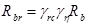
на растяжение по формуле 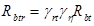
где 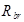 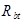 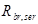 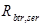
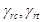
Таблица 3а
|
Коэффициент 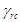 |
Коэффициент 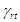 |
||
|
для районов со среднегодовой температурой наружного воздуха 0 °С и выше |
для районов с отрицательной среднегодовой температурой наружного воздуха |
||
|
0,5 |
1,0/0,9 |
1,0/0,9 |
1,0/0,9 |
|
1,0 |
1,1/1,0 |
1,05/1,0 |
1,05/1,0 |
|
2,0 |
1,15/1,10 |
1,10/1,05 |
1,1/1,05 |
|
3,0 и более |
1,20/1,15 |
1,15/1,10 |
1,15/1,1 |
|
Примечания: 1. В числителе приведены
значения коэффициентов 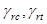 2. При
секционной разрезке коэффициент 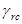 3. Для плотин I класса коэффициенты допускается уточнять путем экспериментальных исследований бетонов принятых составов. |
|||
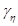
1,1 - при автоматизированном приготовлении бетонной смеси полностью механизированных транспортировке, укладке и уплотнении бетонной смеси.
2.9. Для плотин I и II классов допускается разрабатывать специальные технические условия на цемент, согласовывая и утверждая их в установленном порядке.
2.10. Для бетонных плотин объемом бетона более 1 млн. м3 следует наряду с установленными в СНиП II-56-77 нормативными сопротивлениями бетона на сжатие принимать также и промежуточные их значения.
3.1. Ширину и конструкцию гребня глухой плотины следует принимать в зависимости от вида плотины, условий производства работ, использования гребня в эксплуатационный период для проезда, прохода или других целей, но не менее 2 м.
3.2. Превышение гребня глухой плотины над уровнем воды в верхнем бьефе следует определять в соответствии со СНиП 2.06.05-84. При этом величину запаса возвышения гребня плотины а (с учетом парапета), м, следует принимать: для плотин I класса - 0,8; II - 0,6; III и IV - 0,4.
3.3. Размеры быков водосбросных плотин следует назначать в зависимости от типа и конструкции затворов, размеров водосбросных отверстий, эксплуатационных и аварийных выходов из продольных галерей, размеров и конструкции мостовых пролетных строений. При этом толщину пазового перешейка быка во всех случаях необходимо назначать не менее 0,8 м.
3.4. Отметку верха быков водосливной плотины со стороны верхнего бьефа следует назначать с учетом отметки гребня глухой плотины, типа затворов, условий маневрирования ими, подъемных и транспортных механизмов, наличия мостового перехода и его габаритов по высоте.
Отметку верха быков следует принимать наивысшей из определенных по каждому из перечисленных условий.
3.5. Очертание быков в плане со стороны верхнего бьефа должно обеспечивать плавный вход воды в водосбросное отверстие и минимальное сжатие потока.
В случае пропуска льда оголовок быка следует проектировать заостренной формы.
3.6. Очертание в плане и высоту быков со стороны нижнего бьефа следует определять общими конструктивными требованиями с учетом прочностных и гидравлических условий, расположения мостовых конструкций и других сооружений, а также незатопления верха быков.
3.7. Лицевую грань раздельных и береговых устоев в пределах водосброса следует конструировать аналогично граням быков.
3.8. При проектировании автомобильных или железнодорожных мостов по быкам и устоям плотин к быкам и устоям следует предъявлять дополнительно требования как к мостовым опорам.
3.9. При сопряжении отдельных частей плотины (водосбросной части с глухой) надлежит избегать выступов напорной грани одной части плотины по отношению к другой.
3.10. Вдоль верховой грани плотин следует предусматривать устройство дренажа в виде вертикальных скважин (дрен), имеющих выходы в продольные галереи, или горизонтальных дрен, приуроченных к ярусам бетонирования и имеющих выходы в смотровые шахты, расположенные в межсекционных швах плотины.
3.11. Диаметр вертикальных дренажных скважин следует принимать 10 - 30 см; расстояние между осями дрен - 2-3 м.
Горизонтальные дрены трапецеидального или прямоугольного сечения площадью 400 - 800 см2 следует располагать по высоте плотины через 2-3 м.
3.12. Расстояние от напорной грани плотины до оси дренажа adr, а также до верховой грани продольной галереи следует назначать не менее 2 м при соблюдении условия
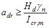
где Hd - напор над расчетным сечением;
gn - коэффициент надежности по назначению сооружения, принимаемый в соответствии с п. 5.13.
Icr,m - критический средний градиент напора для бетона плотины;
Величину критического среднего градиента напора надлежит принимать:
для гравитационных и массивно-контрфорсных плотин - 25;
для арочных и арочно-гравитационных плотин и для арочных напорных перекрытий многоарочных плотин - 50.
3.13. В основании плотин при необходимости следует предусматривать устройство дренажа.
3.14. В теле плотины необходимо предусматривать продольные и поперечные галереи. По высоте плотины галереи следует располагать через 15 - 40 м.
Одну из продольных галерей следует проектировать выше максимального уровня нижнего бьефа для обеспечения самотечного отвода воды из всей вышележащей части плотины. Из нижележащих галерей необходимо предусматривать откачку воды. Выпуск воды в нижний бьеф во всех случаях должен осуществляться ниже минимального уровня.
3.15. Размеры галерей, устраиваемых для цементации основания и строительных швов плотины, создания и восстановления вертикального дренажа, следует принимать минимальными, обеспечивающими провоз и работу бурового, цементационного и другого оборудования, с учетом размещения трубопроводов для охлаждения бетона и кабельных коммуникаций.
Ширину галерей, предусмотренных для сбора и отвода воды, контроля за состоянием бетона плотины и уплотнения швов, размещения КИА и различного рода коммуникаций следует назначать не менее 1,2 м, высоту не менее - 2,0 м.
Пол галереи, предусмотренной для сбора и отвода воды, следует проектировать с уклоном не более 1:40 в сторону водосливного лотка.
3.16. В плотинах, имеющих несколько ярусов галерей, необходимо предусматривать сообщение между ними путем устройства маршевых лестниц или лифтов.
Каждый нижележащий ярус галерей должен иметь аварийные выходы в вышележащий. Каждая продольная галерея должна иметь не менее двух аварийных выходов, расположенных на расстоянии не более 300 м друг от друга.
3.17. В растянутой зоне на напорной грани бетонных, а при обосновании и железобетонных плотин, следует рассматривать целесообразность устройства гидроизоляции (асфальтовой штукатурной, литой асфальтовой, пропиточной битумной, штукатурной минеральной, окрасочной полимерной и полимербитумной).
3.18. При среднемесячной температуре наружного воздуха в наиболее холодном месяце года ниже минус 25 °С в зоне переменного уровня воды следует рассматривать целесообразность устройства по бетонным поверхностям (кроме водосливных) теплогидроизоляции из легкого асфальтобетона, эпоксидно-каменноугольных и поливинил-хлоридных пенопластов и других теплогидроизоляционных материалов.
3.19. Для плотин, возводимых в Северной строительно-климатической зоне, следует рассматривать целесообразность устройства постоянной теплоизоляции открытых поверхностей.
3.20. При проектировании бетонных и железобетонных плотин следует предусматривать постоянные (межсекционные и вертикальные швы-надрезы) и временные (строительные) деформационные швы.
Размеры секций плотин и блоков бетонирования следует определять в зависимости от:
вида и высоты плотин, размера секции здания ГЭС, а также расположения в плотинах водопропускных отверстий, в том числе турбинных водоводов;
методов возведения плотины;
формы поперечного сечения русла, геологического строения и деформируемости основания плотины, климатических условий района строительства с учетом обеспечения монолитности бетона секций плотины между швами.
3.21. При выборе вида деформационных швов и расстояний между ними следует соблюдать требования СНиП II-56-77.
3.22. Ширину постоянного деформационного шва следует назначать на основе сопоставления расчетных данных по ожидаемым деформациям смежных секций плотин с учетом предусматриваемой проектом конструкции шва, деформативных свойств материала его заполнения и обеспечения независимости перемещения секций плотины относительно друг друга.
При предварительном назначении конструкций постоянных деформационных швов их ширину следует принимать (черт. 4):
температурных - 0,5 - 1 см на расстоянии не более 5 м от лицевых граней и гребня, а внутри тела плотины - 0,1 - 0,3 см;
температурно-осадочных - 1 - 2 см в пределах фундаментной плиты плотины и водобоя при любых нескальных и полускальных грунтах основания;
выше фундаментной плиты плотины на нескальных грунтах основания - не менее 5 см.
Черт. 4. Схемы расположения уплотнений в постоянных деформационных швах плотин на скальном (а, б) и нескальном (в, г) основаниях
1 - шов, t = 0,5 - 1 см; 2 - шов, t = 0,1 - 0,3 см; 3 - шов, t = 1 - 2 см; 4 - шов, t ³ 5 см; 5, 6, 7 - соответственно вертикальное, горизонтальное и контурное уплотнения; 8 - дренажное устройство; 9 - смотровая шахта; 10 - смотровая галерея
3.23. В конструкциях постоянных деформационных швов следует предусматривать:
уплотнение, обеспечивающее его водонепроницаемость;
дренажное устройство для отвода профильтровавшейся через уплотнение или в его обход воды;
устройство смотровых шахт и галерей для наблюдения за состоянием шва и ремонта уплотнения.
3.24. Уплотнения постоянных деформационных швов плотин следует подразделять:
по расположению в шве - на вертикальные, горизонтальные и контурные (см. черт. 4);
по конструкции и материалам - на диафрагмы из металла, резины и пластических масс (черт. 5, а), шпонки и прокладки из асфальтовых материалов (черт. 5. б), инъекционные (цементация и битуминизация) (черт. 5, в), брусья и плиты из бетона и железобетона (черт. 5, г).
Для плотин III и IV классов в зонах ниже уровня мертвого объема (УМО) допускается применять уплотнения из антисептированных деревянных элементов, изготовленных из древесины, устойчивой к воздействию воды.
Черт. 5 Схемы основных уплотнений деформационных швов бетонных и железобетонных плотин
а - диафрагмы из металла, резины и пластических масс; б - шпонки и прокладки из асфальтовых материалов; в - инъекционные (цементация и битумизация) уплотнения; г - брусья и плиты из бетона и железобетона; 1 - металлические листы; 2 - профилированная резина; 3 - асфальтовая мастика; 4 - железобетонная плита; 5 - скважины для цементации; 6 - цементационные клапаны; 7 - железобетонный брус; 8 - асфальтовая гидроизоляционная прокладка
3.25. При проектировании конструкций уплотнений деформационных швов плотин необходимо соблюдать следующие условия:
материал уплотнения должен непосредственно примыкать к бетону образующих шов секций;
величина напряжения на контакте асфальтового материала уплотнения с бетоном в рассматриваемом сечении должна быть не менее величины внешнего гидростатического давления воды в том же сечении;
средние градиенты напора фильтрационного потока через бетон по контуру уплотнений шва не должны превышать величин, приведенных в п.3.12.
При определении действующего среднего градиента напора в уплотнениях постоянных швов плотин общий путь фильтрации следует принимать равным:
при изменении температуры бетона в зоне швов в пределах 4 - 6 °С - пути фильтрации в обход асфальтовых шпонок, металлических или резиновых диафрагм с учетом пути фильтрации на длине цементируемых или битуминизированных участков швов между диафрагмами и шпонками;
при изменении температуры бетона в зоне швов свыше 6 °С - только пути фильтрации в обход асфальтовых шпонок, металлических или резиновых диафрагм без учета пути фильтрации на длине цементируемых или битуминизированных участков швов.
3.26. В проекте следует предусматривать омоноличивание временных вертикальных строительных швов до подъема уровня воды перед плотиной. Сроки и порядок омоноличивания межстолбчатых швов следует назначать исходя из проектной температуры омоноличивания массива с учетом температурного изгиба столбов и использования ее для улучшения напряженного состояния плотины.
3.27. При проектировании плотин допускается предусматривать устройство временных расширенных швов, заполняемых бетоном (замыкающие блоки). Сроки омоноличивания расширенных швов следует устанавливать с учетом выравнивания температур между бетонными массивами и окружающей средой, стабилизации осадок и наполнения водохранилища.
3.28. В бетонных и железобетонных плотинах могут устраиваться водосбросы, водоспуски и водовыпуски.
329. Длину водосливного фронта плотины, размеры и число пролетов поверхностных и глубинных водопропускных устройств следует принимать на основании сравнения технико-экономических показателей вариантов в зависимости от величины сбросного расхода основного расчетного случая, устанавливаемой в соответствии со СНиП II-50-74 и допустимых при данных геологических условиях удельных расходов воды; с учетом влияния потока на русло реки и работу других сооружений гидроузла, требований к гидравлическому режиму руслового потока в бьефах и изменения уровней воды в нижнем бьефе, вызываемого деформациями русла и берегов.
Для плотин I, II и III классов необходимо производить сравнение технико-экономических показателей разработанных вариантов по результатам гидравлических расчетов и лабораторных исследований; для плотин IV класса сравнение вариантов следует производить по результатам гидравлических расчетов и аналогам.
3.30. Основным профилем оголовков водосливных плотин всех классов следует принимать безвакуумный профиль криволинейного очертания, плавно сопрягающийся в водосливной гранью плотины. Уклон водосливной грани и ее протяженность следует назначать исходя из конструктивных особенностей профиля плотины.
Очертание оголовков водосливных плотин при напорах до 12 м допускается принимать трапецеидальным или прямоугольным. Применение вакуумных оголовков должно обосновываться технико-экономическими расчетами и гидравлическими расчетами и исследованиями.
3.31. При проектировании водосбросных сооружений плотин и креплений нижнего бьефа, обтекаемых потоком воды со скоростью свыше 15 м/с, следует предусматривать:
плавное очертание обтекаемых поверхностей, обеспечивающее отсутствие или минимальное значение общего вакуума; сглаживание местных неровностей;
подвод воздуха в зоны возможного возникновения кавитации (пазы-аэраторы, уступы, дефлекторы или их сочетания с соответствующими воздухоподводящими устройствами, обеспечивающие отрыв транзитного потока и воздухонасыщение его придонного и пристенных слоев);
использование бетонов с повышенной кавитационной стойкостью, в том числе специальных бетонов на основе полимерных вяжущих.
3.32. Ось глубинного водосброса следует проектировать прямолинейной. Криволинейную ось допускается принимать в случаях, когда это вызывается условиями общей компоновки гидроузла и требует специальных гидравлических расчетов и исследований.
Высотное положение оголовка и наклон оси глубинного водосброса следует назначать с учетом конструктивных особенностей плотины и концевого участка водосброса, диапазона изменения уровней воды в верхнем бьефе, определяемого по схеме пропуска расходов.
Кромки входного сечения глубинных водосбросов должны иметь плавное очертание. Площадь живого сечения глубинных водосбросов на выходном участке следует, как правило, плавно уменьшать.
При расположении камеры затворов во входном оголовке или в средней части тракта глубинного водосброса необходимо предусматривать подвод воздуха за затворы. Устье аэрационной шахты следует максимально (по конструктивным условиям водосброса) приближать к затвору; оно должно быть защищено от попадания струй и брызг воды.
3.33. Конструкцию концевых участков поверхностного и глубинного водосбросов плотины следует выбирать в зависимости от величины удельного расхода воды на выходе, характеристик грунтов основания, а также требований, предъявляемых к основным гидравлическим режимам сопряжения бьефов.
3.34. При поверхностном режиме сопряжения бьефов в конце водосброса следует предусматривать носок-уступ с горизонтальной или наклонной поверхностью, создающий незатопленный режим, при этом прыжок должен быть устойчивым; поток не должен вызывать опасного размыва русла и берегов реки на прилегающем к сооружению участке. Поверхностный режим сопряжения следует принимать с учетом пропуска льда и других плавающих тел.
3.35. При донном режиме сопряжения бьефов следует предусматривать сопряжение водосливной поверхности с водобоем плавным или с небольшим уступом. Отметку поверхности водобоя и рисбермы, их длину и толщину следует назначать на основании гидравлических исследований и технико-экономического сравнения вариантов с учетом всего комплекса мероприятий, влияющих на гидравлические условия в нижнем бьефе (гасители энергии, обеспечивающие образование затопленного прыжка на водобое и благоприятные условия для маневрирования затворами; переходные крепления от бетонной рисбермы к незакрепленному руслу, ковш за переходным креплением и др.). При необходимости следует предусматривать мероприятия по пропуску воды и льда в период строительства плотины.
3.36. При сопряжении бьефов отбросом струи в конце водосброса следует предусматривать носок-трамплин, отбрасывающий поток воды в нижний бьеф на безопасное для сооружений расстояние, а в узких створах - исключающий опасное воздействие потока на берега.
В случае слаботрещиноватого основания в месте падения воды, на основании гидравлических расчетов и исследований следует предусматривать специальные мероприятия для обеспечения необходимой интенсивности гашения энергии воды: устройство водобойного колодца или искусственной ямы размыва, рассредоточение сбросного потока по большей площади посредством многоярусных носков-трамплинов, рассеивающих трамплинов, расщепителей и т.п.
3.37. Удаление (съем) грунта в основании плотины должно быть минимальным и обосновано расчетами плотин на прочность и устойчивость с учетом мероприятий по укреплению грунта основания.
3.38. Выравнивание контактных поверхностей скальных оснований бетонных плотин не допускается. Сопряжение арочных и арочно-гравитационных плотин с косогорными участками основания следует производить, как правило, без уступов.
3.39. При проектировании бетонных и железобетонных плотин в случае необходимости следует предусматривать мероприятия по улучшению прочностных, деформационных и фильтрационных свойств грунтов оснований:
закрепление и уплотнение грунтов основания или его части цементационными или другими вяжущими растворами;
дренирование глинистых водонасыщенных грунтов;
устройство подпорных стен, поддерживающих склоны и откосы массивов и анкеровку неустойчивых скальных массивов;
разделку горным способом крупных трещин, разломов и пустот в скальных массивах с последующим заполнением их бетоном или железобетоном в виде отдельных пробок, шпонок, сплошных полос или решеток.
3.40. Во всех случаях, когда основание сложено фильтрующими слабоводоустойчивыми и быстрорастворимыми грунтами, необходимо предусматривать противофильтрационные и дренажные устройства. При грунтах, устойчивых против химической и механической суффозии, такие устройства должны быть обоснованы технико-экономическими расчетами.
Противофильтрационные и дренажные устройства в основании плотины надлежит сопрягать с аналогичными устройствами в берегах и в примыкающих к плотине сооружениях гидроузла.
3.41. Противофильтрационную завесу следует предусматривать, как правило, до слабоводопроницаемых или практически водонепроницаемых грунтов. Глубина завесы при отсутствии водоупора определяется расчетом с учетом инженерно-геологических условий, проницаемости грунтов, величины противодавления в основании плотины, наличия дренажа и т.д.
3.42. Критические средние градиенты напора на противофильтрационной завесе Icr,m следует принимать:
а) для нескальных грунтов основания - в соответствии с п. 6.43;
б) для скальных грунтов основания
Icr,m = Iadm gn,
где Iadm - допустимый градиент напора на завесе, принимаемый в соответствии со СНиП II-16-76;
gn - см. п. 5.13.
4.1. Нагрузки, воздействия и их сочетания на бетонные и железобетонные плотины следует определять согласно СНиП II-50-74, СНиП 2.06.04-82, СНиП II-7-81 и настоящего раздела.
4.2. При расчетах плотин на основные сочетания нагрузок и воздействий следует учитывать:
постоянные нагрузки и воздействия:
а) собственный вес сооружения, включая вес постоянного технологического оборудования (затворы, подъемные механизмы и пр.), месторасположение которого на сооружении не меняется в процессе эксплуатации;
б) силовое воздействие воды при нормальном подпорном уровне (НПУ) верхнего бьефа, уровне нижнего бьефа, соответствующем пропуску через сооружение минимального по технологическим и экологическим требованиям расхода и нормальной работе дренажных и противофильтрационных устройств:
давление воды на верховую и низовую грани плотины;
пригрузка основания со стороны верхнего и нижнего бьефов;
силовое воздействие фильтрующейся воды;
в) вес грунта, сдвигающегося вместе с плотиной, и боковое давление грунта со стороны верхнего и нижнего бьефов;
временные длительные нагрузки и воздействия:
г) давление наносов, отложившихся перед плотиной;
д) температурные воздействия, определяемые для года со средней амплитудой колебаний среднемесячных температур;
е) поровое давление в водонасыщенном грунте при нормальной работе дренажных и противофильтрационных устройств, НПУ в верхнем бьефе и уровне в нижнем бьефе, соответствующем минимальному по технологическим и экологическим требованиям расходу;
кратковременные нагрузки и воздействия:
ж) силовое воздействие воды при уровнях в верхнем и нижнем бьефах, соответствующих пропуску через сооружение расхода основного расчетного случая, устанавливаемого в соответствии со СНиП II-50-74, и нормальной работе дренажных и противофильтрационных устройств (взамен подпункта «б»):
давление воды на верховую и низовую грани плотины;
пригрузка основания со стороны верхнего и нижнего бьефов;
силовое воздействие фильтрующейся воды;
динамические нагрузки;
з) давление льда, определяемое при его средней многолетней толщине;
и) давление волны, определяемое при средней многолетней скорости ветра;
к) нагрузки от подъемных, перегрузочных, транспортных устройств и других конструкций и механизмов (мостовых и подвесных кранов и т.п.);
л) нагрузки от плавающих тел.
4.3. При расчетах плотин на особые сочетания нагрузок и воздействий следует учитывать постоянные, временные длительные, кратковременные нагрузки и воздействия и одну из следующих особых нагрузок и воздействий:
а) силовое воздействие воды при форсированном подпорном уровне (ФПУ) верхнего бьефа, уровне нижнего бьефа, соответствующем пропуску через сооружение расхода поверочного расчетного случая, устанавливаемого в соответствии со СНиП II-50-74, и нормальной работе дренажных и противофильтрационных устройств (взамен п. 4.2 б, ж):
давление воды на верховую и низовую грани плотины;
пригрузка основания со стороны верхнего и нижнего бьефов;
силовое воздействие фильтрующейся воды;
динамические нагрузки;
б) силовое воздействие воды, обусловленное нарушением одного из дренажных или одного из противофильтрационных устройств, при НПУ в верхнем бьефе и уровне в нижнем бьефе, соответствующем минимальному по технологическим и экологическим требованиям расходу (взамен п. 4.2 б, е, ж):
давление воды на верховую и низовую грани плотины;
пригрузка основания со стороны верхнего и нижнего бьефов;
силовое воздействие фильтрующейся воды;
поровое давление в водонасыщенном грунте основания;
в) температурные воздействия, определяемые для года с максимальной амплитудой колебаний среднемесячных температур, а также для года с максимально низкой среднемесячной температурой (взамен п. 4.2 д);
г) давление льда, определяемое при максимальной многолетней толщине льда обеспеченностью 1 % (взамен п. 4.2 з);
д) давление волны, определяемое при максимальной многолетней скорости ветра обеспеченностью 2 % - для сооружений I и II классов и 4 % - для сооружений III и IV классов (взамен п. 4.2 и);
е) сейсмические воздействия.
4.4. В основные и особые сочетания нагрузок и воздействий следует включать только те из кратковременных нагрузок и воздействий (п. 4.2 ж, з, и, к, л), которые могут действовать одновременно.
4.5. При определении величины пригрузки основания водой в верхнем и нижнем бьефах (пп. 4.2 б, ж; 4.3 а, б) необходимо учитывать разницу в давлении воды на основание до и после возведения сооружения.
4.6. Нагрузки и воздействия для строительного периода плотины и ремонтного случая следует принимать по основному и особому сочетаниям, а величины этих нагрузок и воздействий должны определяться в зависимости от конкретных условий возведения и ремонта сооружения.
4.7. Нагрузки и воздействия должны приниматься в наиболее неблагоприятных, но возможных сочетаниях отдельно для эксплуатационного и строительного периодов.
4.8. Коэффициент надежности по нагрузкам при расчете плотин следует принимать в соответствии со СНиП II-50-74.
4.9. При расчете общей прочности и устойчивости плотин коэффициенты надежности по нагрузке для собственного веса, температурных, влажностных и динамических воздействий, а также для всех грунтовых нагрузок при расчетных значениях характеристик грунтов tgjI, II; сI,II; gI,II, определенных в соответствии со СНиП II-16-76, должны приниматься равными единице.
4.10. Плотность бетона для плотин I, II и III классов следует определять на основе результатов испытания образцов, изготовленных из подобранных составов бетона.
Плотность бетона для плотин IV класса - во всех случаях, а для плотин I, II и III классов - на предварительных стадиях проектирования допускается принимать по табл. 4.
Таблица 4
|
Средняя плотность бетона, кг/м3 при максимальной крупности заполнителя, мм |
|||
|
40 |
80 |
120 |
|
|
2600-2650 |
2370 |
2410 |
2430 |
|
2660-2700 |
2400 |
2450 |
2470 |
|
2700-2750 |
2440 |
2490 |
2500 |
При отсутствии данных о плотности заполнителя плотность бетона следует принимать при плотности заполнителя 2650 - 2700 кг/м3.
4.11. Интенсивность давления воды на наружные грани плотины следует принимать равной p(1 - a2,d), где р - гидростатическое давление, Па; a2,d - коэффициент эффективной площади противодавления в материале плотины, определяемый в соответствии с п. 4.15.
4.12. Интенсивность давления воды на свободные поверхности основания в верхнем и нижнем бьефах (пригрузка основания) следует принимать равной p(1 - a2,f), где a2,f - коэффициент эффективной площади противодавления в грунте основания, см. п. 4.15.
Пригрузку основания в верхнем и нижнем бьефах допускается не учитывать в расчетах устойчивости и прочности:
плотин всех классов высотой менее 60 м, расположенных на скальном основании;
плотин III и IV классов, расположенных на нескальных грунтах;
плотин I и II классов высотой более 60 м, расположенных на скальном основании - на предварительных стадиях проектирования;
плотин I и II классов, расположенных на нескальных грунтах - на предварительных стадиях проектирования.
4.13. Силовое воздействие фильтрующейся воды следует учитывать в виде (черт. 6):
а) поверхностных сил интенсивностью p(a2,f - a2,d), приложенных по нормали к подошве плотины (противодавление), где р - гидродинамическое давление в потоке фильтрующейся воды, Па, определяемое в соответствии с п. 4.14;
б) объемных сил в основании плотины интенсивностью 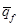
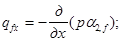
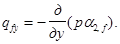
При этом удельный вес грунта основания принимается в водонасыщенном состоянии.
При а2,f = const
в расчетной области основания интенсивность объемных сил равна = - 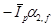 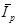
в) объемных сил в водонасыщенных зонах плотины,
включающих части сооружения, расположенные между напорной гранью и дренажом и
между подошвой плотины и уровнем нижнего бьефа интенсивностью 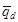
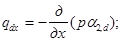
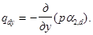
При этом удельный вес бетона принимается в водонасыщенном состоянии.
Черт. 6. Схема силового воздействия воды
1 - сухая часть плотины; 2 - водонасыщенная часть плотины; 3 - дренаж плотины; 4 - объемные силы фильтрующейся воды в водонасыщенных зонах плотины; 5 - давление на низовую грань плотины; 6 - пригрузка основания со стороны нижнего бьефа; 7 - противодавление по подошве плотины; 8 - дренаж основания; 9 - цементационная завеса; 10 - объемные силы фильтрующейся воды в основании; 11 - пригрузка основания со стороны верхнего бьефа; 12 - давление на верховую грань плотины
При а2,d = const в расчетной области водонасыщенных зон плотины
интенсивность объемных сил равна = 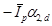
Если в водонасыщенных частях плотины и основания значения коэффициента а2 изменяются скачкообразно от значения а2 до значения а2, причем а2 > а2, то на границе областей с различными значениями а2 следует прикладывать нормальные к линии раздела областей поверхностные силы интенсивностью p(a2 - a2), направленные в сторону области с a2.
Силовое воздействие фильтрующейся воды следует учитывать только в виде противодавления и объемных сил в основании плотины:
при расчетах плотин II класса высотой более 60 м, расположенных на скальном основании, - во всех случаях;
при расчетах плотин I и II классов, расположенных на нескальном основании, - во всех случаях.
Силовое воздействие фильтрующейся воды следует учитывать только в виде противодавления:
при расчетах плотин всех классов высотой менее 60 м, расположенных на скальном основании, - во всех случаях;
при расчетах плотин III и IV классов, расположенных на нескальном основании, - во всех случаях;
при расчетах плотин I и II классов высотой более 60 м, расположенных на скальном основании, а также плотин I и II классов, расположенных на нескальном основании, - на предварительных стадиях проектирования.
При этом удельный вес грунта принимается во взвешенном состоянии.
4.14. Значения гидродинамического давления р и его
градиента 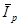
На наружных гранях плотины и свободных поверхностях основания в верхнем и нижнем бьефах значения р совпадают с величиной гидростатического давления.
На линии, разделяющей водонасыщенную и сухую части плотины (кривая депрессии), р = 0.
На подошве плотины гидродинамическое давление, Па, определяется по формуле
где hv - ордината пьезометрического напора в рассматриваемой точке под взвешивающим воздействием нижнего бьефа, м;
hf - то же, при фильтрации под действием расчетного напора Hd, м;
gw - удельный вес воды, Н/м3.
Значение hv определяется как разность отметок уровня воды в нижнем бьефе и рассматриваемой точки.
Для плотин высотой менее 60 м на скальных основаниях значения hf допускается находить по эпюрам, приведенным на черт. 7, при этом величину hf по оси цементационной завесы Нas и по оси дренажных устройств Нdr следует принимать по табл. 5.
Черт. 7. Эпюры пьезометрического напора по подошве плотины
a - гравитационная плотина с цементационной завесой в основании; б - гравитационная плотина без цементационной завесы; в - гравитационная плотина с продольной полостью у основания; г - гравитационная плотина с расширенными швами и массивно-контрфорсная плотина; д - контрфорсная плотина с плоским перекрытием; е - арочная плотина
Таблица 5
|
Значения Нas/Нd и Нdr/Нd при сочетании нагрузок на плотины |
||||||
|
основные и особые при ФПУ и нормальной работе противофильтрационных и дренажных устройств |
особые в случае нарушения нормальной работы противофильтрационных и дренажных устройств |
|||||
|
плотины с цементационной завесой |
плотины без цементационной завесы |
плотины с цементационной завесой |
плотины без цементационной завесы |
|||
|
Нas/Нd |
Нdr/Нd |
Нdr/Нd |
Нas/Нd |
Нdr/Нd |
Нdr/Нd |
|
|
Гравитационные без полостей у основания (черт. 7, а и б) классов: |
||||||
|
I |
0,40 |
0,20 |
0,20 |
0,50 |
0,30 |
0,40 |
|
II |
0,40 |
0,15 |
0,15 |
0,50 |
0,20 |
0,30 |
|
III и IV |
0,30 |
0,05 |
0,05 |
0,35 |
0,10 |
0,10 |
|
Гравитационные с продольной полостью у основания (черт. 7, в) I-IV классов |
0,30 |
0,10 |
0,10 |
0,35 |
0,15 |
0,20 |
|
Гравитационные с расширенными швами и массивно-контрфорсные (черт. 7, г) I-IV классов |
0,20 |
0,05 |
0,05 |
0,25 |
0,10 |
0,10 |
|
Арочные (черт. 7, e) I-IV классов |
0,40 |
0,20 |
0,20 |
0,60 |
0,35 |
0,40 |
|
Примечание. Для контрфорсных плотин с плоским или арочным перекрытием эпюра пьезометрического напора при фильтрации под действием расчетного напора Hd принимается по треугольнику с ординатой hf = 0 на низовой грани верхового клина плотины (черт. 7, д). |
||||||
4.15. Значения коэффициента a2 следует принимать:
для крупнообломочных, песчаных и сильнотрещиноватых полускальных грунтов, раскрывшихся строительных швов и зон растяжения бетона и скального основания равным 1,0;
для глинистых грунтов, а также в сжатой зоне бетона и скального основания - по результатам исследований с учетом водопроницаемости бетона и грунтов основания, режима заполнения и колебаний уровня воды водохранилища, эффективности противофильтрационных устройств на напорной грани, в швах плотины и основании, включая береговые примыкания; до выполнения перечисленных здесь исследований, а также при предварительных расчетах допускается принимать a2 = 0,5.
Следует принимать a2,d = 0 в случаях:
расчетов устойчивости плотин всех классов и видов;
расчетов прочности плотин всех классов с гидроизолирующим экраном на напорной грани;
расчетов прочности плотин всех классов, расположенных на нескальном основании.
Допускается принимать a2,d = 0 в расчетах прочности плотин II, III, IV классов, расположенных на скальном основании.
4.16. При расчете устойчивости давление наносов Pws, кН со стороны верхнего бьефа на 1 м длины сооружения допускается определять по формуле
где - удельный вес грунта наносов во взвешенном состоянии, кН/м3;
- высота наносов перед плотиной, м;
- угол внутреннего трения грунта наносов, град.
4.17. Температурные воздействия следует принимать по данным многолетних наблюдений за температурой воздуха в створе плотины и на основании прогноза температуры воды в водохранилище.
4.18. Динамические нагрузки при осуществлении сбросов воды следует определять для плотин I и II классов по результатам расчетов и экспериментальных исследований, для плотин III и IV классов - по результатам расчетов или аналогам.
4.19. Поровое давление в грунтах учитывается при проверке устойчивости на сдвиг и прогнозе осадок плотины при возведении ее на глинистых грунтах со средним коэффициентом фильтрации менее 10-2 м/сут и коэффициентом водонасыщения более 0,8.
5.1. Расчеты бетонных и железобетонных плотин согласно СТ СЭВ 384-76 надлежит производить по методу предельных состояний:
предельные состояния первой группы (по непригодности к эксплуатации) - расчеты сооружения на общую прочность и устойчивость, а также на местную прочность его элементов;
предельные состояния второй группы (по непригодности к нормальной эксплуатации) - расчеты основания на местную и фильтрационную прочность, расчеты сооружения по образованию трещин и деформациям, а также по раскрытию строительных швов в бетонных и трещин в железобетонных конструкциях.
5.2. Расчеты бетонных и железобетонных плотин должны производиться в соответствии со СНиП II-50-74, СНиП II-16-76, СНиП II-56-77 и требованиями данного раздела.
5.3. Для плотин I и II классов в дополнение к расчетам, как правило, необходимо предусматривать проведение экспериментальных исследований; для плотин III и IV классов такие исследования допускается выполнять при надлежащем обосновании.
5.4. Расчеты на общую прочность и устойчивость, по деформациям и по раскрытию трещин, а также расчеты по раскрытию строительных швов с учетом очередности возведения плотины следует выполнять для всей плотины в целом или для отдельных ее секций (или отдельных столбов).
5.5. Расчеты на местную прочность и по образованию трещин следует производить для отдельных конструктивных элементов сооружения; для бетонных конструкций расчеты по образованию трещин следует выполнять только для элементов, ограниченных строительными и конструктивными швами.
5.6. Расчеты плотин, их оснований и отдельных элементов на прочность и устойчивость следует производить для наиболее неблагоприятных расчетных случаев эксплуатационного и строительного периодов с учетом последовательности возведения и нагружения плотины.
5.7. Расчет прочности и устойчивости части плотин (пусковой профиль) всех классов в случае, когда проектом предусмотрены возведение и сдача в эксплуатацию гидроузла отдельными очередями, следует выполнять на все нагрузки и воздействия, установленные для рассматриваемого этапа строительства, при этом условия прочности плотин и устойчивости для периода временной эксплуатации следует принимать такими же, как и для периода постоянной эксплуатации.
В проекте должна предусматриваться очередность возведения плотины и ее отдельных элементов, при которой усилия, возникающие в строительный период, не вызывают необходимости в дополнительном армировании или другом утяжелении сооружения.
5.8. Расчеты на прочность плотин I и II классов, возводимых на скальных основаниях, следует выполнять с применением вычислительных методов геотехники и теории упругости с учетом возможного раскрытия строительных швов в сооружении и трещин в скальном основании.
Расчеты на прочность плотин I и II классов, возводимых на нескальных основаниях, необходимо выполнять с учетом пространственной работы фундаментной плиты и других несущих элементов конструкции. При этом внутренние усилия следует определять с учетом неупругого поведения конструкций, вызванного трещинообразованием в бетоне, принимая жесткости сечений в соответствии со СНиП II-56-77.
Расчеты на прочность плотин III и IV классов, а также предварительные расчеты плотин I и II классов следует выполнять, как правило, упрощенными методами строительной механики.
5.9. Расчеты на прочность плотин, которые отнесены к I или II классу только в зависимости от последствий нарушения эксплуатации водоподпорных гидротехнических сооружений, допускается производить упрощенными методами строительной механики.
5.10. При определении напряженно-деформированного состояния плотины и основания методами теории упругости допускается рассматривать бетон как изотропный материал, при этом следует учитывать:
наличие ориентированных вдоль оси плотины полостей (продольные галереи, помещения машинного зала гидроэлектростанций и т.д.) в случае, если максимальный из габаритных размеров поперечного сечения полости составляет более 10 % ширины подошвы плотины;
наличие ориентированных в вертикальном направлении или вдоль потока полостей (расширенные швы, турбинные водоводы, поперечные галереи и т.д.) в случае, если площадь горизонтального сечения полости составляет более 5 % площади горизонтального расчетного сечения плотины;
различие прочностных и деформационных характеристик материала плотины и основания;
неоднородность основания и наличие в нем трещин и разломов;
возможность раскрытия строительных швов и нарушения сплошности основания в растянутых зонах с обязательным расчетом на прочность образовавшейся при этом вторичной системы;
очередность возведения, а также способы и сроки омоноличивания плотины.
5.11. Зоны и величина раскрытия межстолбчатых и межблочных швов со стороны низовой грани плотины, а также межсекционных швов в неразрезных плотинах определяются с учетом собственного веса сооружения, гидростатического давления и температурных воздействий строительного и эксплуатационного периодов, учитывая начальный режим твердения бетона, температуру замыкания строительных швов, полное остывание кладки до среднемноголетней эксплуатационной температуры плотины и сезонные колебания температуры наружного воздуха и воды в водохранилище.
5.12. Расчеты бетонных плотин на сейсмические воздействия следует выполнять в соответствии с требованиями СНиП II-7-81 и разд. 7, 8, 9.
Расчеты плотин всех классов следует производить в рамках линейно-спектральной теории.
Для плотин, расположенных в районах сейсмичностью свыше 7 баллов, относящихся к I классу, допускается производить расчеты с использованием инструментальных записей ускорений основания, а также синтезированных акселерограмм; в этом случае следует учитывать возможность развития неупругих деформаций в сооружении и использовать полученные экспериментально значения нормативных сопротивлений бетона при динамических воздействиях.
5.13. При расчетах бетонных и железобетонных плотин необходимо вводить следующие коэффициенты:
коэффициент надежности по назначению сооружения 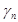 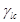
коэффициент условий работы , принимаемый по табл. 6.
Таблица 6*
|
Виды расчетов плотин и факторы, обуславливающие введение коэффициентов условий работы |
Коэффициент условий работы |
|
1. Расчеты устойчивости бетонных и железобетонных плотин на полускальных и нескальных основаниях |
1 |
|
2. Расчеты устойчивости гравитационных и контрфорсных плотин на скальных основаниях: |
|
|
а) для поверхностей сдвига, проходящих по трещинам в массиве основания |
1 |
|
б) для поверхностей сдвига, проходящих по контакту бетон - скала и в массиве основания частично по трещинам, частично по монолиту |
0,95 |
|
3. Расчеты устойчивости береговых упоров арочных плотин |
0,75 |
|
4. Расчеты общей и местной
прочности бетонных плотин: 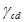 |
|
|
а) по растяжению: |
|
|
для основного сочетания нагрузок и воздействий |
0,9 |
|
для особых сочетаний нагрузок и воздействий без учета сейсмических |
1,0 |
|
то же, с учетом сейсмических |
1,1 |
|
б) по сжатию: |
|
|
для основного сочетания нагрузок и воздействий |
1,0 |
|
для особых сочетаний нагрузок и воздействий |
1,1 |
|
Расчеты общей и местной прочности железобетонных плотин и их элементов, когда определяющей является прочность бетона в конструкциях: |
|
|
а) железобетонных - плитных и ребристых при толщине плиты (ребра) 60 см и более |
1,15 |
|
б) железобетонных - плитных и ребристых при толщине плиты (ребра) менее 60 см |
1 |
|
5. То же, для случаев, когда определяющей является прочность ненапрягаемой арматуры: |
|
|
а) железобетонных элементов |
1,1 |
|
б) сталежелезобетонных конструкций |
0,8 |
|
Примечания: 1. При расчетах прочности и устойчивости арочных и арочно-гравитационных плотин коэффициенты условий работы, приведенные в табл. 6, следует умножать на коэффициент значения которого приведены в п. 9.19. 2. При расчетах общей и местной прочности бетонных и железобетонных плотин всех видов для случаев, когда определяющей является прочность напрягаемой арматуры, а также при учете многократно повторяющихся нагрузок на элементы плотин коэффициенты условий работы принимаются в соответствии со СНиП II-56-77. |
|
5.14. При расчетах общей прочности и устойчивости плотины, а также местной прочности отдельных элементов должно соблюдаться одно из следующих условий:
F £ R;
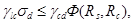
где , , - коэффициенты, принимаемые согласно п. 5.13;
F, R - соответственно расчетные значения обобщенного силового воздействия и обобщенной несущей способности сооружения;
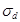
Ф - функция, вид которой определяется в зависимости от характера напряженно-деформированного состояния плотины;
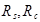
Для расчетного случая, определяющего объем сооружения или его стоимость, правая часть неравенства должна превышать его левую часть не более чем на 10 %.
5.15. В расчетах бетонных плотин на общую прочность, а также по деформациям в случаях, когда в расчете наличие швов не учитывается, расчетное значение модуля деформации бетонной кладки плотины Ebd, МПа, следует принимать:
для плотин, возведенных столбчатыми массивами или с перевязкой блоков бетонирования
Ebd = Eb[1 - 0,04(nj - nji)]; (3)
для плотин, возведенных послойным методом бетонирования
Ebd = 0,75 Eb [1 - 0,04 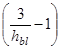
где Eb - начальный модуль упругости бетона, МПа;
nj - число вертикальных швов бетонирования на подошве плотины;
nji - число межстолбчатых или межсекционных швов, для которых применены меры их технологического обжатия;
hbl - высота блока бетонирования, м.
При этом в статических расчетах расчетный модуль деформации Еbd, МПа, должен быть в пределах 0,65 Eb £ Еbd £ 30 000.
Для динамических расчетов модуль деформации бетонной кладки должен назначаться с учетом указаний СНиП II-7-81; при этом значение Еbd должно быть ограничено величиной 40 000 МПа.
5.16. В расчетах бетонных плотин на общую прочность, а также по деформациям в случаях, когда наличие швов учитывается в расчете, в расчетах термонапряженного состояния бетонных плотин, по раскрытию трещин и строительных швов и при анализе данных натурных наблюдений о напряженном состоянии сооружения расчетное значение модуля деформации бетонной кладки следует принимать Еbd = Еb или по данным его определения в самом сооружении.
5.17. В расчетах прочности железобетонных элементов плотин расчетное значение модуля деформации Еbd следует принимать равным начальному модулю упругости бетона Еb, принимаемому в соответствии со СНиП II-56-77.
5.18. Начальный модуль упругости бетона бетонных плотин Еb, МПа, в возрасте t менее 180 сут. следует определять по формуле
где а - безразмерный параметр, принимаемый по табл. 7.
Таблица 7
|
Максимальный размер крупного заполнителя, Dmax, мм |
Параметр a при проектном классе бетона по прочности на сжатие |
||||||||
|
В5 |
B7,5 |
В10 |
B12,5 |
B15 |
B20 |
В25 |
B30 |
||
|
< 4 |
40 |
27 |
37 |
45 |
54 |
62 |
77 |
90 |
106 |
|
80 |
32 |
44 |
56 |
66 |
77 |
98 |
116 |
133 |
|
|
120 |
37 |
52 |
66 |
77 |
90 |
116 |
139 |
162 |
|
|
4-8 |
40 |
20 |
28 |
35 |
41 |
47 |
58 |
68 |
80 |
|
80 |
25 |
37 |
42 |
50 |
58 |
71 |
86 |
102 |
|
|
120 |
29 |
40 |
50 |
60 |
68 |
86 |
102 |
116 |
|
|
> 8 |
40 |
12 |
15 |
18 |
22 |
26 |
35 |
42 |
50 |
|
80 |
14 |
19 |
24 |
29 |
33 |
42 |
52 |
60 |
|
|
120 |
17 |
23 |
29 |
35 |
40 |
50 |
60 |
68 |
|
При возрасте бетона 180 сут. и более начальный модуль упругости бетона бетонных плотин допускается принимать по табл. 8.
Таблица 8
|
Максимальный размер крупного заполнителя, Dmax, мм |
Начальный модуль упругости бетона при сжатии и растяжении Eb 10-3, МПа при проектном классе бетона по прочности на сжатие |
||||||||
|
В5 |
B7,5 |
В10 |
B12,5 |
B15 |
B20 |
В25 |
B30 |
||
|
< 4 |
40 |
23,5 |
28,0 |
31,0 |
33,5 |
35,5 |
38,5 |
40,5 |
42,5 |
|
80 |
26,0 |
30,5 |
34,0 |
36,5 |
38,5 |
41,5 |
43,5 |
45,0 |
|
|
120 |
28,0 |
33,0 |
36,5 |
38,5 |
40,5 |
43,5 |
45,5 |
47,0 |
|
|
4 - 8 |
40 |
19,5 |
24,0 |
27,0 |
29,5 |
31,5 |
34,5 |
37,0 |
39,0 |
|
80 |
22,5 |
28,0 |
30,0 |
32,5 |
34,5 |
37,5 |
40,0 |
42,0 |
|
|
120 |
24,5 |
29,0 |
32,5 |
35,0 |
37,0 |
40,0 |
42,0 |
43,5 |
|
|
> 8 |
40 |
13,0 |
16,0 |
18,0 |
21,0 |
23,0 |
27,0 |
30,0 |
32,5 |
|
80 |
15,0 |
19,0 |
22,0 |
24,5 |
26,5 |
30,0 |
33,0 |
35,0 |
|
|
120 |
17,5 |
21,5 |
24,5 |
27,0 |
29,0 |
32,5 |
35,0 |
37,0 |
|
5.19. Расчетные сопротивления бетона для зон сооружения, где материал испытывает объемное сжатие, следует назначать в соответствии со СНиП II-56-77.
В случае плоского напряженного состояния при действии напряжений одного знака расчетные сопротивления бетона следует принимать как при одноосном нагружении.
В зонах сооружения, где материал находится в условиях плоского или объемного напряженных состояний при действии напряжений разного знака расчетные сопротивления бетона сжатию и растяжению допускается определять как при одноосном нагружении.
5.20. При определении прочностных, деформационных и фильтрационных характеристик грунтов оснований бетонных и железобетонных плотин и при выборе расчетных схем следует обращать особое внимание на наличие в грунтовых массивах различных зон ослабления:
в основаниях из нескальных грунтов - областей из просадочных грунтов, из грунтов мягкопластичной или текучей консистенции, из заторфованных грунтов, из грунтов рыхлого сложения;
в основаниях из скальных грунтов - систем мелких и средних трещин, единичных крупных трещин и разломов, выветрелых и сильно выветрелых областей и зон разгрузки.
5.21. Расчеты общей фильтрационной прочности грунтов основания следует производить при осредненных градиентах напора в расчетной области фильтрации в соответствии со СНиП II-16-76.
5.22. Расчеты местной прочности противофильтрационных элементов плотины (понура, зубьев, инъекционной завесы) и грунта основания следует производить в соответствии со СНиП II-16-76 при критических градиентах напора:
на участке выхода фильтрационного потока в нижний бьеф и в дренажные устройства;
на границе неоднородных грунтов;
в местах расположения крупных трещин.
5.23. Проверку отсутствия высачивания подземных вод на склоны и подтопления окружающей сооружение территории следует производить посредством сопоставления расчетных и допустимых уровней депрессионной поверхности фильтрационного потока.
5.24. Фильтрационные расчеты плотин допускается выполнять, считая фильтрацию подчиняющейся линейному закону и режим ее установившимся. При быстроизменяющихся уровнях воды в бьефах должны выполняться расчеты при неустановившемся режиме фильтрации.
5.25. Характеристики фильтрационного потока (уровни, давления, градиенты напора, расходы) для плотин I, II и III классов надлежит определять методом ЭГДА, на аналоговых и цифровых вычислительных машинах (АВМ и ЭВМ), принимая задачу:
для русловых участков плотины - двумерной в вертикальных разрезах;
для береговых участков - двумерной в плане и вертикальных разрезах по линиям тока или пространственной.
Для плотин IV класса и при предварительных расчетах плотин I, II и III классов характеристики фильтрационного потока допускается определять приближенными аналитическими методами (коэффициентов сопротивлений, фрагментов и др.).
5.26. При определении характеристик фильтрационного потока необходимо учитывать влияние:
дренажных и противофильтрационных устройств;
полостей и расширенных швов в основании и потерн в теле плотины;
водопроницаемости бетона;
напряженно-деформированного состояния основания;
температуры подземных вод и их минерализации.
5.27. Фильтрационные расчеты бетонных и железобетонных плотин, которые отнесены ко II и III классу только в зависимости от последствий нарушения эксплуатации водоподпорных гидротехнических сооружений, допускается выполнять приближенными аналитическими методами.
5.28. Гидравлические расчеты и исследования следует проводить на основной и поверочный расчетные случаи, устанавливаемые в соответствии со СНиП II-50-74.
5.29. Исходя из основного расчетного случая на основании технико-экономических расчетов устанавливаются общая длина водосливного фронта, типы, число и размеры поперечных сечений водопропускных сооружений, значения удельных расходов воды, основные параметры сооружений нижнего бьефа.
5.30. Поверочные расчеты следует проводить для случая пропуска расхода поверочного расчетного случая при наивысшем технически и экономически обоснованном форсированном подпорном уровне верхнего бьефа.
5.31. Другие случаи пропуска расходов воды следует предусматривать схемой маневрирования затворами плотины. При этом величины и порядок открытия затворов следует назначать исходя из необходимости получения в нижнем бьефе условий, которые не потребуют дополнительных мероприятий для защиты сооружений и прилегающих к ним участков русла по сравнению с основным расчетным случаем.
6.1. Конструирование водосбросных бетонных и железобетонных плотин и их элементов на нескальных основаниях следует выполнять в соответствии с требованиями разд. 3 и указаниями настоящего раздела.
6.2. Для водосбросных бетонных и железобетонных плотин на нескальных основаниях надлежит различать следующие основные элементы (черт. 8):
фундаментные плиты;
быки и устои;
водосливы и водосбросы;
деформационные швы и их уплотнения;
водобой и рисберма;
противофильтрационные устройства (понур, шпунты, буробетонные сваи и стенки, зубья, противофильтрационные завесы);
дренажные устройства.
Черт. 8. Отдельные части и элементы водосливной плотины с анкерным понуром на нескальном основании
1 - паз ремонтного затвора; 2 - паз рабочего затвора; 3 - промежуточный бык; 4 - дренажная галерея; 5 - низовой участок фундаментной плиты; 6 - гасители энергии; 7 - водобой; 8 - рисберма; 9 - предохранительный ковш; 10 - переходное деформируемое крепление; 11 - горизонтальный дренаж водобоя и рисбермы; 12 - дренажные колодцы; 13 - обратный фильтр; 14 - вертикальный дренаж основания; 15 - горизонтальный дренаж фундаментной плиты; 16 - верховой подплотинный шпунт; 17 - горизонтальный дренаж понура; 18 - понурный шпунт; 19 - надшпунтовая балка; 20 - крепление пригрузки; 21 - пригрузка понура; 22 - анкерный понур; 23 - гибкий участок анкерного понура; 24 - верховой участок фундаментной плиты; 25 - водослив; 26 - гребень водослива
6.3. Водосбросные бетонные и железобетонные плотины на нескальных основаниях следует разбивать на секции температурно-осадочными швами, как правило, по оси быков.
При однородном основании допускается не разбивать плотину на секции, устраивая в отдельных случаях швы-надрезы.
6.4. Величину заглубления фундаментной плиты плотины в грунт следует устанавливать с учетом требований статической устойчивости, гидравлических и фильтрационных условий.
При необходимости следует предусматривать устройство бетонного зуба или низового шпунтового ограждения.
6.5. Торец фундаментной плиты плотины с понуром из связных грунтов следует проектировать наклонным в сторону верхнего бьефа.
6.6. В пределах секции плотины следует предусматривать жесткое соединение быков с фундаментной плитой. Допускается предусматривать раздельное возведение быков и фундаментной плиты с последующим омоноличиванием швов.
6.7. Сопрягающий устой, входящий в состав береговой секции плотины, следует располагать, как правило, на общей фундаментной плите. Допускается сопрягающий устой проектировать в виде подпорной стены, при этом в температурно-осадочном шве между устоем, водосливом и фундаментной плитой необходимо предусматривать уплотнения.
6.8. Сопрягающие устои в пределах понура, водобоя и рисбермы следует проектировать в виде подпорных стен.
6.9. При проектировании плотины, в зависимости от пролета водосливных отверстий, климатических и инженерно-геологических условий района строительства следует предусматривать жесткую заделку водослива в быки или устройство между ними температурных швов, прорезающих водослив в плоскости лицевой грани быка от гребня до верха фундаментной плиты. При водосливных отверстиях пролетом более 30 м следует предусматривать устройство температурных швов в теле водослива.
6.10. Глубинные водосбросы плотин на нескальных основаниях надлежит проектировать в виде замкнутых железобетонных рам.
6.11. При проектировании водосбросных плотин на нескальных основаниях в качестве основной формы сопряжения бьефов следует принимать донный режим, предусматривая в необходимых случаях устройство гасителей энергии и растекателей потока.
6.12. При донном режиме сопряжения бьефов в качестве основных надлежит принимать следующие типы гасителей энергии:
сплошная водобойная стенка;
водобойный колодец;
водобойная стенка с расположенным ниже ее неглубоким водобойным колодцем;
прорезная водобойная стенка;
гаситель в виде нескольких рядов шашек или пирсов;
комбинированные из разных типов указанных гасителей.
Допускается применение и других типов гасителей при надлежащем технико-экономическом и экспериментальном обосновании.
6.13. Выбор типа гасителей, их расположение на водобое необходимо определять на основании технико-экономического сравнения вариантов с учетом допустимых глубин на водобое, условий возникновения кавитации и сбойности течения, а также размывающей способности потока ниже гасителей. Минимальное расстояние от сжатого сечения потока до гасителей следует принимать равным от 4 до 4,5 высоты прыжка или применять безэрозионные гасители.
Конструкция гасителя наряду с гашением энергии должна обеспечивать устойчивость потока и исключать опасность возникновения сбойных течений. В нижнем бьефе малопролетных плотин целесообразно применение специальных противосбойных гасителей.
6.14. Длина и профиль рисбермы, конструкция переходного крепления от рисбермы к незакрепленному руслу должны определяться на основе технико-экономического сопоставления вариантов, с учетом обеспечения неразмывающих скоростей потока в начале незакрепленного русла.
6.15. Для плотин I, II и III классов рисберму следует проектировать, как правило, в виде плит из монолитного бетона или железобетона.
Для плотин IV класса рисберму допускается предусматривать в виде каменной наброски или отмостки, габионных сеток, сборных бетонных или железобетонных плит, соединенных между собой арматурой.
6.16. Толщины плит водобоя и рисбермы определяются расчетом из условий обеспечения их прочности и устойчивости с учетом осредненных и пульсационных нагрузок. Необходимо предусматривать разрезку их температурно-осадочными швами, дренирование подплитной области, устройство дренажных колодцев и др.
6.17. Тип и конструкцию дренажа подплитной области водобоя и рисбермы, размеры и размещение дренажных колодцев следует выбирать в зависимости от величины и распределения гидродинамического давления при различных сбросных расходах через плотину. При этом должны быть исключены возникновение высокого осредненного и пульсационного давления в подплитной области и суффозионные явления в обратном фильтре и подстилающем грунте.
Допускается устраивать закрытые дренажные колодцы с выводом фильтрационной воды в сопрягающих устоях, раздельных стенках, быках.
Выпуски дренажа следует размещать в зонах пониженного давления, ниже минимального уровня нижнего бьефа.
В рисберме из сборных плит дренажные колодцы допускается не устраивать.
6.18. В конце рисбермы следует предусматривать устройства в виде вертикальной стены, предохранительного ковша, переходного деформируемого кропления или сочетания из этих конструкций (см. черт. 8).
6.19. Вертикальные стены в конце рисбермы или водобоя (в виде бетонной или железобетонной стены, шпунтовой стены плоской или ячеистой конструкции, ряжей, заполненных камнем и др.) следует проектировать на всю глубину возможного размыва грунта. Допускается устраивать вертикальную стену не на полную глубину размыва с участком переходного деформируемого крепления за ней.
6.20. При устройстве предохранительного ковша в конце рисбермы с переходным креплением его верхового откоса и дна заложение низового размываемого откоса ковша следует определять из условия его устойчивости в строительный период. Заложение верхового откоса ковша следует назначать с учетом гидравлических условий растекания потока и размещения на нем наклонного участка рисбермы или переходного деформируемого крепления.
6.21. Переходное деформируемое крепление надлежит проектировать в виде отдельных бетонных или железобетонных плит, шарнирно связанных между собой или с компенсационными связями; из гравийной или каменной наброски; габионных, фашинных креплений или иной конструкции тюфяков с пригрузкой их камнем или гравием, а также в виде сочетания этих типов креплений.
Тип крепления следует выбирать на основании сравнения технико-экономических показателей разработанных вариантов с учетом гидравлических условий, допустимой глубины размыва и других факторов.
6.22. Подземный контур бетонных и железобетонных плотин на нескальных основаниях в зависимости от физико-механических характеристик грунтов следует предусматривать из следующих конструктивных элементов:
понура;
вертикальной преграды в виде шпунта, зуба или противофильтрационной завесы;
дренажа горизонтального или вертикального.
6.23. Надлежит рассматривать следующие основные схемы подземного контура:
1 - бездренажные фундаментная плита и понур;
2 - горизонтальный дренаж под фундаментной плитой;
3 - горизонтальный дренаж под фундаментной плитой и понуром;
4 - вертикальная преграда, пересекающая водопроницаемое основание на всю его глубину;
5 - сочетание из понура, вертикальной преграды, не доходящей до водонепроницаемого слоя, и дренажа, устраиваемого за вертикальной преградой.
При наличии в основании плотины перемежающихся слоев песчаных и глинистых грунтов, а также напорных грунтовых вод в подземном контуре плотины следует устраивать глубинные дренажные скважины.
6.24. Схему 1 следует применять при расположении плотины на песчаных грунтах и глубоком (более 20 м) залегании водоупора в случаях, когда общая устойчивость сооружения обеспечивается без специальных мер по снижению фильтрационного давления, а по условию фильтрационной устойчивости грунтов основания требуется предусматривать удлиненный подземный контур. В остальных случаях при указанных геологических условиях надлежит применять схему 2.
Схему 3 следует применять при наличии в основании глинистых грунтов, требующих для обеспечения устойчивости сооружения на сдвиг применения анкерного понура. При этом является обязательным устройство понурного шпунта.
Схему 4 надлежит применять при залегании водоупора на глубине не более 20 м. В этом случае понур допускается не предусматривать.
Схему 5 следует применять для плотин с напором более 10 м, возводимых на средних по проницаемости грунтах.
6.25. Понуры по конструкции подразделяются на:
жесткие - в виде покрытий из бетона и железобетона;
гибкие - выполняемые из грунтов, асфальтовых, полимерных и других материалов, отвечающих требованиям деформативности, водонепроницаемости, прочности, стойкости к химической агрессии;
смешанной конструкции из гибкого и жесткого участков (анкерные понуры).
6.26. Коэффициент фильтрации понура должен быть в 50 и более раз меньше коэффициента фильтрации грунтов основания.
Водонепроницаемые понуры следует предусматривать при грунтах основания из глины или суглинков.
Маловодопроницаемые понуры (с коэффициентом фильтрации К £ 10-3 м/с) - при песчаных грунтах и супесях.
Для плотин IV класса понур следует устраивать преимущественно из местных материалов (суглинков, глин, торфа, разложившегося не менее чем на 50 %).
6.27. Длину понура следует устанавливать на основании результатов расчетов фильтрационной прочности грунта основания и устойчивости плотины.
6.28. Толщина грунтового понура ta должна быть ta ³ DНиа gп /Iсr,т, но не менее 0,5 м, где DНиа - потеря напора от начала подземного контура (от верхнего бьефа до рассматриваемого вертикального сечения понура); Iсr,т - критический средний градиент напора для материала понура, определяемый в соответствии со СНиП 2.06.05-84, gп - см. п. 5.13.
6.29. Гибкие водонепроницаемые понуры следует проектировать:
литыми - из последовательно наносимых слоев литого гидроизоляционного материала с прокладкой армирующей рулонной стеклотканью;
оклеечными - из рулонных гидроизоляционных материалов в несколько слоев, перекрывая каждым последующим слоем стык нижерасположенного слоя.
6.30. Бетонные понуры следует проектировать в виде плит с гидроизоляцией по напорной грани и уплотнением швов между плитами и между понуром и граничащими сооружениями.
Для плотин IV класса при слабодеформируемых грунтах основания допускается применять бетонные понуры без гидроизоляционного покрытия. В этом случае толщину понура следует определять по критическому среднему градиенту напора для бетона Iсr,т = 30.
6.31. Анкерный понур следует предусматривать для плотин, расположенных, как правило, на глинистых грунтах.
Жесткие участки анкерного понура следует проектировать в виде железобетонной плиты с оклеечной или литой гидроизоляцией и с выпусками арматуры, заделываемой в анкеруемое сооружение.
Гибкий участок должен воспринимать все деформации (сдвиг и осадку), возникающие в месте контакта с анкеруемым сооружением, и сохранять при этом полную водонепроницаемость.
6.32. Для понуров всех видов, за исключением бетонных, следует предусматривать пригрузку их грунтом, предохраняемым от размыва креплением в виде бетонных плит или каменной наброски.
6.33. Подготовку основания под понур необходимо предусматривать:
для понуров из местных материалов при песчаных и супесчаных грунтах основания - уплотнением поверхности основания; в случае крупнообломочных грунтов основания - в виде песчаного переходного слоя толщиной не менее 10 см;
для бетонного или анкерного понуров - уплотнением поверхности основания и укладкой слоя бетона толщиной 5-10 см;
для понуров из асфальтовых или полимерных материалов - путем укладки слоя щебня или гравия, пропитанного битумом, или слоя бетона толщиной 5-10 см.
6.34. В сопряжениях понура с плотиной, с подпорными стенами, с раздельным устоем, с понурным шпунтом и в сопряжениях отдельных секций понура между собой необходимо предусматривать уплотнения согласно указаниям пп. 3.21-3.25. При выборе конструкции уплотнений следует учитывать величины возможных деформаций граничащих сооружений.
6.35. Вид шпунта (металлического, железобетонного или деревянного) следует выбирать в зависимости от геологических условий, расчетного напора и глубины погружения.
6.36. Общую глубину погружения шпунта следует принимать не менее 2,5 м, а глубину погружения шпунта в водонепроницаемый слой - не менее 1 м.
6.37. Передача силовых нагрузок от сооружения на противофильтрационные шпунты не допускается.
6.38. Верховой подплотинный шпунт следует предусматривать при отсутствии понура.
Применение бесшпунтовых схем подземного контура допускается в случае несвязных грунтов основания при наличии понура или при заглублении подошвы верхового зуба фундаментной плиты в водонепроницаемые грунты и при обеспечении низовым зубом фундаментной плиты фильтрационной прочности основания.
6.39. При применении в подземном контуре плотины висячих (не доходящих до водоупора) шпунтов расстояние между двумя смежными рядами шпунтов следует принимать не менее суммы глубин их погружения.
6.40. При проектировании бетонных и железобетонных плотин на нескальных основаниях следует предусматривать верховой и низовой подплотинные зубья.
Противофильтрационные бетонные и железобетонные зубья (преграды) следует предусматривать в случаях, когда применение шпунта невозможно по инженерно-геологическим условиям.
6.41. Температурно-деформационный шов между противофильтрационным зубом и фундаментной плитой плотины следует устраивать при надлежащем обосновании.
6.42. При песчаных и крупнообломочных грунтах основания допускается предусматривать у верховой грани плотины противофильтрационную завесу или преграду, выполняемую в виде траншеи, заполненной бетоном или глинистым грунтом, буробетонной стенки.
Глубину противофильтрационной завесы, характеристики ее водонепроницаемости следует назначать в зависимости от напора на плотину, фильтрационных и суффозионных свойств грунта основания, требований по снижению противодавления на подошву плотины.
6.43. Толщина противофильтрационной завесы ta должна быть ta ³ DНс gп /Iсr,т,
где DНс - потеря напора в данном сечении завесы;
gп - см. п. 5.13;
Iсr,т - критический средний градиент напора на завесе.
В зависимости от вида грунтов основания величину Iсr,т для завес следует принимать:
в мелкозернистых песках 4
в средне- и крупнозернистых песках 5
в гравийно-галечниковом грунте 6
6.44. Устройство горизонтального дренажа, выполняемого из крупнозернистого материала (щебня, гравия) и защищенного от заиления обратным фильтром, следует предусматривать: для плотин на глинистых грунтах основания, а также на песчаных грунтах в случаях, когда для обеспечения устойчивости плотины недостаточно устройства понура или вертикальной противофильтрационной преграды; под водобоем, рисбермой, плитами крепления откосов, особенно в зонах пульсационного и волнового воздействий, при наличии в основании плотины размываемых грунтов.
6.45. Число слоев обратного фильтра и зерновой состав надлежит определять в соответствии со СНиП 2.06.05-84.
Толщину слоя горизонтального дренажа следует назначать с учетом конструктивных особенностей плотины и производственных условий, но не менее 20 см.
6.46. Отвод воды из горизонтального дренажа следует предусматривать в дренаж водобоя или посредством дренажной системы, проходящей через тело плотины, сопрягающий или раздельный устой, в нижний бьеф. Выходные отверстия дренажной системы следует предусматривать в местах со спокойным режимом потока и располагать ниже минимального уровня нижнего бьефа.
6.47. Расчеты плотин на нескальных основаниях на прочность и устойчивость следует производить в соответствии с указаниями разд. 5 и настоящего раздела.
6.48. Величины контактных напряжений по подошве плотин на нескальных основаниях надлежит определять согласно требованиям СНиП II-16-76 и настоящего раздела.
При расчете нормальных контактных напряжений методами сопротивления материалов величины напряжений, МПа, в угловых точках фундаментной плиты секции плотины следует определять по формуле
где N - нормальная сила (с учетом противодавления), МН;
А - площадь подошвы секции плотины, м2;
Мx, My - изгибающие моменты относительно главных осей инерции подошвы плотины, МН×м;
Wx, Wy - моменты сопротивления подошвы плотины для соответствующих угловых точек А, В, С и D относительно главных осей инерции, м3.
6.49. При раздельном возведении быков, устоев и фундаментной плиты плотины на основании из песчаных грунтов реакция основания полностью возведенного сооружения должна определяться путем суммирования эпюры контактных напряжений для строительного периода под каждым элементом сооружения и эпюры напряжений, полученной от нагрузок, прикладываемых к сооружению после его омоноличивания.
Для основания плотины из глинистых грунтов контактные напряжения следует определять с учетом перераспределения их во времени.
6.50. Секции плотин I и II классов следует рассчитывать на общую прочность как пространственные конструкции совместно с упругим основанием методами строительной механики или теории упругости с учетом перераспределения усилий вследствие трещинообразования.
Предварительные расчеты прочности плотин I и II классов, а плотин III и IV классов во всех случаях допускается производить приближенно, рассматривая их работу раздельно в поперечном (вдоль потока) и в продольном (поперек потока) направлениях в соответствии с требованиями пп. 6.52 - 6.53.
6.51. В случаях, когда схема расчета плотины на общую прочность не учитывает особенности работы отдельных элементов (фундаментная плита, быки, водослив и др.) и приложения к ним местных нагрузок, указанные элементы следует дополнительно рассчитывать на местную прочность. Расчетные усилия, напряжения и количество арматуры в различных сечениях плотины следует определять с учетом результатов расчетов как на общую прочность секции плотины, так и на местную прочность отдельных элементов.
6.52. Расчет общей прочности плотины в поперечном направлении следует производить:
водосливной плотины - как ребристой конструкции, ребрами жесткости которой являются быки и полубыки;
двухъярусной плотины и плотины с глубинными водосбросами - как конструкции коробчатого вида.
В расчетное сечение следует вводить только часть быков и полубыков по высоте. Допускается ограничивать расчетную высоту быков и полубыков наклонными плоскостями, проходящими под углом 45° к горизонтали через крайние точки сопряжения с фундаментной плитой.
Аналогично должна ограничиваться высота расчетного сечения водослива.
6.53. Расчет общей прочности секции плотины в продольном направлении следует производить:
водосливной плотины - как балки на упругом основании;
двухъярусной плотины и плотины с глубинными водосбросами - как рамной конструкции на упругом основании.
При расчете общей прочности секции водосливной плотины в продольном направлении массив водослива вводится в расчетное сечение только в случае отсутствия температурных швов в пролете водослива. При наличии температурных швов между телом водослива и быком и полубыком в расчетное сечение следует вводить часть водослива, ограниченную плоскостями, проходящими через основание шва под углом 45° к горизонтали.
При расчете общей прочности в продольном направлении секции двухъярусной плотины или плотины с донными водосбросами фундаментную плиту, пролетные конструкции водосброса, быки и полубыки в расчетные сечения следует включать полностью.
6.54. Распределение полной горизонтальной сдвигающей силы между анкерным понуром и плотиной независимо от вида грунта основания надлежит определять с учетом упругой деформации грунта в их основании и растяжения арматуры понура по методу коэффициента сдвига и упругого слоя конечной глубины.
Метод коэффициента сдвига применим для определения усилия, воспринимаемого анкерным понуром, в случаях, когда на протяжении всей длины понура отсутствует состояние предельного равновесия, т.е. соблюдается условие
tтах < tlim = Риа tgj + c,
где tтах - наибольшее касательное напряжение под понуром, МПа;
tlim - касательное напряжение под понуром, соответствующее состоянию предельного равновесия, МПа;
Риа - интенсивность вертикального давления на понур, МПа;
j, с - соответственно расчетные значения угла внутреннего трения, град, и удельного сцепления грунта основания, МПа.
В расчетах допускается принимать tтах = 0,8 tlim.
6.55. По методу коэффициента сдвига горизонтальную силу, МН, воспринимаемую секцией понура, в зависимости от характера распределения площади сечения арматуры по длине понура следует определять при распределении по:
треугольнику - по формуле
прямоугольнику
трапеции
Q¢u¢a¢ = Q¢ua + (Q¢u¢a - Q¢ua) (9)
где Q - полная сдвигающая сила, действующая на секцию плотины, МН;
Kx, K1,x - коэффициенты постели при сдвиге для грунтов основания соответственно понура и плотины, МН/м3;
lа, b - соответственно длина понура и ширина подошвы плотины, м;
I0, I1 - бесселевы функции чисто мнимого аргумента;
- площадь сечения арматуры соответственно в конце и в начале (в месте примыкания к плотине) понура, м2;
a - величина, характеризующая упругие свойства понура и его основания, определяемая по формуле
(10)
здесь Еs - модуль упругости арматуры, МПа, принимаемый в соответствии со СНиП II-56-77;
bda - ширина расчетного участка понура, равная длине секции плотины.
Коэффициент постели при сдвиге, МН/м3, определяется по формуле
где Ку - коэффициент постели при сжатии, МН/м3;
v - коэффициент Пуассона грунта;
y - коэффициент, зависящий от соотношения стороны подошвы фундамента (понура или плотины) в направлении действия сдвигающей силы (la или b) к длине секции плотины la, принимаемый по табл. 9.
Таблица 9
|
Коэффициент y |
|
|
0,10 |
0,73 |
|
0,20 |
0,68 |
|
0,33 |
0,63 |
|
0,50 |
0,59 |
|
1,0 |
0,50 |
|
2,0 |
0,41 |
|
3,0 |
0,37 |
|
5,0 |
0,32 |
|
10 |
0,27 |
Величину коэффициента постели при сжатии Ку следует определять с учетом данных полевых исследований.
6.56. Величину горизонтальной силы, воспринимаемой понуром, следует учитывать при проверке устойчивости плотины на сдвиг при определении расчетного значения обобщенной силы предельного сопротивления.
7.1. Конструирование гравитационных плотин и их элементов следует выполнять в соответствии с разд. 3 и указаниями настоящего раздела.
7.2. При проектировании гравитационных плотин на скальных основаниях (черт. 9) следует рассматривать техническую возможность и экономическую целесообразность применения наряду с массивными гравитационных плотин облегченных видов, приведенных на черт. 1, б - д.
Для массивных гравитационных плотин следует рассматривать возможность применения для внутренних зон малоцементного жесткого бетона.
А-А
Черт. 9. Отдельные части и элементы гравитационных плотин на скальном основании
а - глухая плотина, б - водосливная плотина; 1 - гребень; 2 - противофильтрационные уплотнения; 3 - температурные швы; 4 - паз ремонтного заграждения; 5 - паз рабочего затвора; 6 - промежуточный бык водосливной плотины; 7 - гребень водослива; 8 - водосливная грань; 9 - смотровые галереи; 10 - дрены тела плотины; 11 - носок-трамплин; 12 - подошва; 13 - разгрузочная полость; 14* - дренажная галерея; 15 - противофильтрационная (обычно цементационная) завеса; 16 - низовой клин; 17 - дренажные скважины основания; 18 - верховой клин; 19* - цементационная галерея; 20 - напорная грань; 21 - низовая грань
__________
* Допускается производить устройство цементационной завесы и дренажа из одной галереи.
7.3. Для створов, в которых lch/h £ 5 (где lch - ширина ущелья по хорде на уровне гребня плотины, h - высота плотины), следует рассматривать целесообразность применения наряду с плотинами с постоянными температурными швами (разрезные плотины) плотин с частично или полностью омоноличенными поперечными температурными швами или без швов (неразрезные плотины).
7.4. Исходный поперечный профиль гравитационной плотины должен иметь форму треугольника с вершиной на отметке нормального подпорного уровня воды в верхнем бьефе.
7.5. Для снижения фильтрационного противодавления в основании гравитационных плотин следует предусматривать устройство дренажа основания, а при необходимости и местных разгрузочных полостей по подошве плотины (см. черт. 9). В плотинах с расширенными швами ширина полости шва должна составлять не более половины ширины секции плотины.
7.6.* В тех случаях, когда основание плотины сложено грунтами со средним коэффициентом фильтрации К ³ 0,1 м/сут, в составе подземного контура плотины следует предусматривать противофильтрационные устройства (цементационная завеса, понур) и дренаж.
При этом расстояние от напорной грани платины до оси цементационной завесы должно быть, как правило (0,05 - 0,1) В (где В - ширина подошвы плотины), если подземный контур плотины состоит только из цементационной завесы и дренажа.
Расстояние между дренажными и цементационными скважинами должно быть больше радиуса цементации и не менее 4 м.
Применение понура и размещение в этом случае цементационной завесы необходимо обосновать результатами фильтрационных исследований и расчетов прочности.
В тех случаях, когда грунты, слагающие основание плотины, водонепроницаемы или слабоводопроницаемы (К < 0,1 м/сут), включение в состав подземного контура наряду с дренажом цементационной завесы должно быть обосновано результатами фильтрационных исследований. Если устройство цементационной завесы не предусматривается, следует рассмотреть необходимость укрепительной цементации зоны контакта плотины с основанием.
7.7. Глубину заделки крупных разрывных нарушений в скальном основании следует определять по результатам расчета напряженного состояния плотины совместно со скальным основанием с учетом неоднородности основания (при этом должны выполняться условия прочности п. 7.18), а также специальных исследований.
7.8. Проектирование гравитационных плотин на основаниях из полускальных грунтов выполняется так же, как плотин на основаниях из скальных грунтов, но в расчеты таких плотин должны вводиться соответствующие характеристики полускальных грунтов.
7.9. Основные схемы сопряжения бьефов водосбросных гравитационных плотин всех классов в зависимости от высоты сооружения и ширины створа принимаются по табл. 10.
Таблица 10
|
высота плотины, м |
Схема сопряжения бьефов |
|
|
lch/h > 3 |
До 40 |
Донный гидравлический прыжок Незатопленный поверхностный прыжок* |
|
Св. 40 |
Отброс струй носками-трамплинами |
|
|
lch/h £ 3 |
Любая |
Донный гидравлический прыжок |
|
* Сопряжение бьефов с помощью незатопленного поверхностного прыжка для плотин высотой более 40 м допускается при гидравлическом обосновании. |
||
7.10. Конструкцию водобоя для плотин I и II классов высотой более 40 м следует обосновывать результатами гидравлических расчетов и экспериментальных исследований: водобои плотин всех классов высотой до 40 м допускается проектировать на основании результатов гидравлических расчетов и аналогов.
Водобойные стенки обтекаемой формы, водобойные колодцы или безэрозионные гасители надлежит применять в качестве гасителей энергии для плотин I, II, III классов высотой более 25 м. Для плотин всех классов высотой до 25 м допускается предусматривать гасители, указанные в п.6.12.
Для уменьшения толщины плит водобоя следует предусматривать:
анкерное крепление плит к основанию - независимо от высоты плотины;
устройство в плитах дренажных колодцев - в плотинах высотой до 25 м, а при гидравлическом обосновании - в плотинах высотой до 40 м.
7.11. Для улучшения напряженного состояния в приконтактной зоне плотины и в основании и для предотвращения температурного трещинообразования следует рассматривать целесообразность устройства одного или нескольких горизонтальных швов-надрезов со стороны верховой грани с постановкой в швах уплотнений.
7.12. Расчеты плотины и ее элементов на прочность, устойчивость и трещиностойкость, а также ее железобетонных конструкций на раскрытие трещин надлежит выполнять в соответствии с требованиями СНиП II-56-77, СНиП II-16-76, разд. 5 и указаниями настоящего раздела.
7.13. Расчеты гравитационных плотин разрезной конструкции, имеющих плоские постоянные поперечные швы, на прочность и устойчивость следует производить по схеме плоской задачи, рассматривая отдельно одну секцию или условно вырезанный 1 м плотины. Напряженное состояние плотины следует определять отдельно для каждого вида секций (глухих, водосливных, станционных) с учетом специфики их возведения и статической работы.
Расчеты устойчивости неразрезных плотин допускается проводить для сооружения в целом. Расчеты неразрезных плотин на прочность допускается выполнять аналогично расчетам арочных плотин согласно указаниям разд. 6, а также методами решения объемной задачи теории упругости.
Напряженное состояние неразрезных плотин, работающих в сложных пространственных условиях (несимметричность створа, действующих нагрузок и реакции основания, в том числе от береговых упоров), следует определять как для пространственной задачи экспериментальными или расчетными методами.
7.14. Расчеты общей прочности бетонных гравитационных плотин, как правило, выполняются на полный состав нагрузок и воздействий основных и особых сочетаний.
Допускается рассчитывать на сокращенный состав нагрузок и воздействий основного и особых сочетаний плотины высотой более 60 м на начальных стадиях проектирования, а плотины высотой менее 60 м - на всех стадиях проектирования.
7.15. В расчетах плотин на полный состав нагрузок и воздействий учитываются нагрузки и воздействия в соответствии с указаниями пп. 4.2 - 4.5. При этом:
в качестве температурных воздействий рассматриваются изменения температурного состояния сооружения, определенные с учетом начального режима твердения бетона, температуры замыкания строительных швов, полного остывания бетонной кладки до среднемноголетних эксплуатационных температур, сезонных колебаний температуры наружного воздуха и воды в водохранилище и наличия эксплуатационного подогрева сооружения (если подогрев предусматривается);
силовое воздействие фильтрующейся воды в теле плотины и основании принимается в виде объемных и поверхностных сил согласно указаниям п. 4.13;
сейсмические воздействия определяются согласно указаниям СНиП II-7-81 для двух- или трехмерных схем расчета в соответствии со схематизацией, принятой в расчетах сооружения на статические воздействия.
При обосновании в полный состав нагрузок и воздействий эксплуатационного периода для основного и особых сочетаний допускается включать воздействия набухания бетона верховой грани плотины.
7.16. Расчеты общей прочности плотин на полный состав нагрузок и воздействий следует производить:
а) для начального периода эксплуатации построенного сооружения, когда его остывание до среднемноголетних эксплуатационных температур еще не произошло;
б) для установившегося периода эксплуатации сооружения, когда оно полностью остыло до среднемноголетних температур.
Проверка условий общей прочности плотины в обоих случаях выполняется, как правило, для февраля и августа.
7.17. Расчеты плотин на полный состав нагрузок и воздействий эксплуатационного периода выполняются методами теории упругости с учетом возможного раскрытия строительных швов у низовой грани сооружения.
Глубина раскрытия швов у низовой грани определяется расчетом в соответствии с указаниями п.5.11.
Материал у верховой грани плотины, а также в основании сооружения условно принимается сплошным, а возможность раскрытия швов на верховой грани плотины, включая контактное сечение, косвенно учитывается в критериях прочности назначением соответствующих предельных глубин зоны растяжения.
7.18. Условия прочности гравитационных плотин, рассчитываемых на полный состав нагрузок и воздействий эксплуатационного периода, следует принимать по табл. 11,
где gn, glc, gcd - коэффициенты, принимаемые согласно п. 5.13;
sз - максимальные главные сжимающие напряжения, МПа;
Rb - расчетное сопротивление бетона сжатию, МПа;
b - ширина плотины по основанию, м;
bd - ширина расчетного горизонтального сечения, м;
dt - глубина зоны растяжения в горизонтальных сечениях тела плотины и контактном сечении, определенная в предположении работы бетона у верховой грани плотины на растяжение, м;
t - размер секции в направлении оси плотины, м;
t1 - толщина стенки секций в пределах расширенных швов (толщина контрфорсов), м;
bh - толщина оголовка секции с расширенными швами по торцевому сечению, м;
а1 - расстояние от верховой грани до дренажа тела плотины, м;
а2 - расстояние от верховой грани плотины до оси цементационной завесы, м;
а3 - расстояние от верховой грани плотины до первого ряда дренажных скважин в основании, м;
- безразмерный коэффициент.
Таблица 11
|
Во всех точках тела плотин всех видов при основных и всех особых сочетаниях нагрузок и воздействий gn glc sз £ gcd Rb* |
|||
|
У верховой грани сооружения |
|||
|
Конструктивные особенности плотин и расчетные сечения |
Основные сочетания нагрузок |
Особые сочетания нагрузок |
|
|
не включающие сейсмические воздействия |
включающие сейсмические воздействия |
||
|
А. Плотины без расширенных швов Горизонтальные сечения тела плотины без гидроизоляционного экрана на верховой грани |
dt £ 0,167bd |
dt £ 0,286bd** |
|
|
То же, с гидроизоляционным экраном на верховой грани |
dt £ 0,167bd |
dt £ 0,200bd |
dt £ 0,286bd** |
|
Контактное сечение без гидроизоляции контакта верховой грани плотины с основанием |
dt £ 0,300a2*** |
dt £ 0,083b |
dt £ 0,200b |
|
То же, с гидроизоляцией контакта верховой грани плотины с основанием |
dt £ 0,083b |
dt £ 0,125b |
dt £ 0,200b |
|
Б. Плотины с расширенными швами Горизонтальные сечения тела плотины |
|||
|
Контактное сечение |
dt £ 0,300ha2*** |
*** |
*** |
|
* При проверке прочности у низовой грани допускается осреднять величину sз на участке расчетного горизонтального сечения шириной 4,0 м. ** При невыполнении указанных условий надлежит руководствоваться указаниями п. 7.22. *** В тех случаях, когда подземный контур плотины не содержит цементационной завесы, вместо а2 принимается а3 для плотин без расширенных швов и bh для плотин с расширенными швами. |
|||
7.19. В расчетах прочности плотин на сокращенный состав нагрузок и воздействий температурные воздействия исключаются из рассмотрения, сейсмические определяются по линейно-спектральной теории в соответствии со СНиП II-7-81 для случая расчета сооружения по одномерной (консольной) схеме, а силовое воздействие фильтрующейся воды учитывается только в виде сил противодавления, приложенных на контакте бетон-скала.
В тех случаях, когда амплитуда сезонных колебаний температуры наружного воздуха в районе расположения плотины превышает 17 °С, следует учитывать уменьшение ширины расчетных горизонтальных сечений тела плотины или по ее подошве за счет раскрытия строительных швов у низовой грани сооружения под влиянием указанных изменений температуры воздуха.
С целью снижения материалоемкости сооружений плотины всех классов высотой до 60 м, возводимые в районах с амплитудой сезонных колебаний температуры наружного воздуха более 17 °С, следует рассчитывать методами теории упругости на полный состав нагрузок и воздействий, обеспечивая выполнение условий прочности, приведенных в табл. 11.
7.20. В расчетах прочности плотин на сокращенный состав нагрузок и воздействий эксплуатационного периода напряжения определяются методами сопротивления материалов, причем значения напряжений, МПа, на верховой и низовой гранях сооружения (черт. 10) следует определять по формулам:
(12)
(13)
(14)
(15)
(16)
; (17)
(18)
(19)
(20)
(21)
(22)
где , , , - нормальные напряжения по горизонтальным и вертикальным площадкам соответственно у верховой и низовой граней, МПа;
, - касательные напряжения по горизонтальным и вертикальным площадкам соответственно у верховой и низовой граней, МПа;
, , , - максимальные растягивающие и максимальные сжимающие главные напряжения соответственно у верховой и низовой граней плотины, МПа;
- нормальные напряжения, действующие по площадкам контактного сечения у верховой грани, МПа;
М - момент сил, приложенных к плотине выше расчетного сечения, относительно центра тяжести этого сечения, МН×м;
N - нормальная сила, равная сумме проекций на нормаль к расчетному сечению всех сил, действующих на плотину выше расчетного сечения, МН;
bd - ширина расчетного сечения, м;
gw - удельный вес воды, МН/м3;
, , h - соответственно напоры над расчетным сечением со стороны верхнего и нижнего бьефов и напор над контактным сечением у верховой грани со стороны верхнего бьефа, м;
mu, mt - соответственно наклоны верховой и низовой граней на уровне расчетного сечения;
a - угол между плоскостью напорной грани плотины и вертикальной плоскостью, град;
d - угол между плоскостью подошвы плотины и горизонтальной плоскостью, град.
В приведенных формулах нормальные растягивающие силы и напряжения приняты со знаком «плюс», сжимающие - со знаком «минус»; изгибающий момент по часовой стрелке принят со знаком «плюс», против часовой стрелки - со знаком «минус».
Черт. 10. Обозначения к расчету плотины на прочность
а - массивной; б - с расширенными швами и контрфорсной; h - высота плотины: b - ширина плотины по основанию; t - длина секции; t1 - толщина секции в пределах расширенных швов (толщина контрфорса); bh - толщина торцевого сечения оголовка; а1 - расстояние от дренажа тела плотины до верховой грани; а2 - расстояние от оси цементационной завесы до верховой грани; а3 - расстояние от дренажа основания до верховой грани; Hd - напор над расчетным сечением; bd - ширина расчетного сечения; mu, mt - уклоны граней плотины соответственно верховой и низовой; , , - соответственно нормальные напряжения, действующие по горизонтальным площадкам у верховой грани, по площадкам, перпендикулярным к низовой грани, по площадкам контактного сечения плотины с основанием у верховой грани.
7.21. Условия прочности гравитационных плотин, рассчитываемых на сокращенный состав нагрузок и воздействий эксплуатационного периода, принимаются по табл. 12, где gn, glc, gcd, sз, Rb, b, bd, dt, t, t1, bh, а1, а2, а3, - см. п. 7.18; , , gw, - см. п. 7.20.
7.22. В тех случаях, когда при расчете общей прочности гравитационных плотин на особые сочетания нагрузок, включающие сейсмические воздействия, глубина растянутой зоны у верховой грани тела плотины dt, превышает ее предельное значение, равное 0,286 bd, надлежит:
при 0,286 < dt < 0,320bd - оценивать прочность сооружения в сечении по условию gn glcsз £ gcdRb с определением значений напряжений sз без учета работы бетона на растяжение у верховой грани плотины;
при dt > 0,320bd - армировать верховую грань сооружения, рассматривая сечение тела плотины как железобетонное и обеспечением прочности бетона сжатой зоны по условию gnglcsз £ gcdRb.
Для плотин, рассчитываемых на сокращенный состав нагрузок и воздействий методами сопротивления материалов, максимальные главные сжимающие напряжения на низовой грани сооружения при выходе из работы бетона растянутой зоны допускается определять по формуле
где , , тt - см. п. 7.20. (23)
Для облегчения напряженного состояния плотины при сейсмических воздействиях и уменьшения количества арматуры на верховой грани сооружения надлежит предусматривать конструктивные мероприятия, в том числе снижение массы оголовка плотины.
7.23. При выборе условия прочности из числа приведенных в табл. 11 и 12 наличие гидроизоляции верховой грани учитывается в том случае, если предусмотрена защита гидроизоляционного экрана от внешних механических повреждений или возможен его ремонт, а дренаж тела плотины предусмотрен непосредственно за экраном; наличие гидроизоляции контакта учитывается в том случае, если понур имеет длину не менее 0,166 h, а напорная грань плотины защищена противофильтрационным экраном, сопряженным с понуром, на высоту от подошвы не менее 0,166b и не менее 2a1 (см. черт. 10).
Таблица 12
|
Во всех точках тела плотин всех видов при основных и всех особых сочетаниях нагрузок и воздействий: gn glc sз £ gcd Rb |
|||
|
У верховой грани сооружения |
|||
|
Конструктивные особенности плотин и расчетные сечения |
Основные сочетания нагрузок |
Особые сочетания |
|
|
не включающие сейсмические воздействия |
включающие сейсмические воздействия |
||
|
А. Плотины без расширенных швов Горизонтальные сечения тела плотины без гидроизоляционного экрана на верховой грани |
< 0* ³ 0,25 gw, |
dt £ 0,133bd |
dt £ 0,286bd** |
|
То же, с гидроизоляционным экраном на верховой грани |
dt £ 0,133bd |
dt £ 0,167bd |
dt £ 0,286bd** |
|
Контактное сечение плотины без гидроизоляции контакта верховой грани плотины с основанием |
< 0 |
dt £ 0,300a2*** |
dt £ 0,200b |
|
То же, с гидроизоляцией контакта верховой грани плотины с основанием |
dt £ 0,071b |
dt £ 0,083b |
dt £ 0,200b |
|
Б. Плотины с расширенными швами Горизонтальные сечения тела плотины |
< 0* ³ 0,25 gw, |
dt £ 0,133hbd |
dt £ 0,286hbd |
|
Контактное сечение |
< 0 |
dt £ 0,300ha2 |
dt £ 0,200hb |
|
* Если на некоторой части напорной грани плотины не выполняются данные условия прочности, то на этом участке верховой грани следует предусматривать дополнительные меры по гидроизоляции и предотвращению недопустимого раскрытия строительных швов. ** При невыполнении указанных условий прочности надлежит руководствоваться указаниями п. 7.22. *** В тех случаях, когда подземный профиль плотины не содержит цементационной завесы, вместо a2, принимается a3, для плотин без расширенных швов и bh для плотин с расширенными швами. |
|||
7.24. Местные напряжения в теле плотины вокруг отверстий, проемов и полостей определяются расчетами методом теории упругости или по результатам экспериментальных исследований.
Концентрация напряжений во входящих углах проемов не учитывается при оценке прочности тела плотины и назначении количества арматуры.
7.25. При проектировании поверхностных и глубинных водосбросных отверстий плотин следует выполнять расчет прочности опорных конструкций затворов (пазов, консолей и т. п.). Расчеты прочности этих конструкций следует выполнять методами теории упругости с учетом совместной работы стальных опорных деталей и бетонного основания.
При интенсивности нагрузки на опорный рельс паза, превышающей 2500 кН/м, кроме расчетов прочности пазовых конструкций рекомендуется выполнять экспериментальные исследования на моделях этих конструкций.
7.26. Расчет устойчивости гравитационных плотин на сдвиг выполняется в соответствии со СНиП II-16-76. Следует рассматривать устойчивость плотины как по контакту сооружения с основанием, так и по другим возможным расчетным поверхностям сдвига, полностью или частично проходящим ниже подошвы плотины и определяемым наличием в основании слабых прослоек, полого падающих трещин, зон размыва, размещением в нижнем бьефе плотины каких-либо сооружений и т.д.
Наряду с расчетом устойчивости на сдвиг необходимо рассматривать устойчивость по схеме предельного поворота с разрушением основания в зоне низовой грани плотины.
Для сооружений из бетона с пониженными характеристиками прочности на сдвиг, в том числе для плотин, возводимых из укатанного бетона или без специальной обработки горизонтальных строительных швов, следует производить проверку устойчивости на сдвиг по строительным швам.
7.27. При проверке устойчивости плотины следует учитывать совместную с ней работу на сдвиг здания ГЭС или других массивных сооружений, непосредственно примыкающих к плотине со стороны нижнего бьефа. Доля общего сдвигающего усилия, приходящаяся на здание станции или другое сооружение, определяется расчетом напряженного состояния контакта плотины и примыкающего к ней сооружения.
В расчетной схеме по определению сдвигающего усилия для здания станции следует учитывать конструкцию сопряжения здания станции с низовой гранью плотины. Для сооружений I и II классов высотой более 60 м при сложных инженерно-геологических условиях в дополнение к расчету, как правило, надлежит проводить исследования на моделях.
7.28. Расчеты устойчивости неразрезных плотин следует выполнять как для всего сооружения в целом, так и для отдельных его частей, определяемых в зависимости от неоднородности геологического строения основания, особенностей конструкции и условий возведения плотины. В расчетах необходимо учитывать возможность сдвига совместно с сооружением и части скального основания, а также реакцию береговых упоров.
7.29. При расчете плотин на нагрузки и воздействия строительного периода во всех точках тела плотины должны выполняться условия прочности:
gn glc sз £ gcd Rb;
gn glc s1 £ gcd Rbt,
где gn, glc, gcd - коэффициенты, определяемые согласно указаниям п. 5.13;
sз, Rb - см. п. 7.18;
s1 - максимальное главное растягивающее напряжение, МПа;
Rbt - расчетное сопротивление бетона растяжению, МПа.
На всех этапах строительства должна быть обеспечена устойчивость на сдвиг и опрокидывание отдельных элементов (в частности, столбов) плотины.
При возведении плотины очередями ее прочность должна быть обеспечена, как правило, без омоноличивания строительных швов между очередями.
7.30. Расчет плотин всех классов по образованию трещин от температурных воздействий выполняется для всех бетонных поверхностей, подверженных температурным воздействиям наружного воздуха в эксплуатационный период, а также для блоков бетонирования на температурные воздействия строительного периода.
Расчеты трещиностойкости выполняются с применением методов механики хрупкого разрушения и с использованием характеристик бетона, полученных путем испытаний крупномасштабных образцов. Для плотин I и II классов на начальных стадиях проектирования, а для плотин III и IV классов - на всех стадиях проектирования оценку трещиностойкости бетонных конструкций при температурных воздействиях допускается производить в соответствии со СНиП II-56-77.
При определении глубины раскрытия швов на низовой грани плотины следует принимать в расчетах коэффициент линейного расширения для промороженного бетона.
8.1. Конструирование контрфорсных плотин и их элементов следует выполнять в соответствии с разд. 3 и указаниями настоящего раздела.
8.2. При выборе вида контрфорсной плотины предпочтение следует отдавать массивно-контрфорсным плотинам (черт. 11).
Черт. 11. Отдельные части и элементы массивно-контрфорсной плотины
1 - гребень; 2 - контрфорс; 3 - низовое перекрытие; 4 - противофильтрационные уплотнения; 5 - массивный оголовок; 6 - полости; 7 - низовой клин; 8 - перекрытия полостей; 9 - смотровые галереи; 10 - дренажная галерея; 11 - дренаж основания; 12 - противофильтрационная (обычно цементационная) завеса; 13 - цементационная галерея; 14 - верховой клин; 15 - дренаж плотины
Плотины с плоским перекрытием следует проектировать высотой не более 50 м.
8.3. Верховые оголовки массивно-контрфорсных плотин, как правило, необходимо проектировать с плоской напорной гранью; в теле оголовка должен предусматриваться дренаж.
Напорные перекрытия многоарочных плотин следует проектировать неразрезными в виде сводов, жестко соединенных с оголовком контрфорса.
Плоские напорные перекрытия, как правило, надлежит проектировать разрезными в виде плит, свободно опертых на оголовке контрфорсов.
Толщина напорного перекрытия контрфорсных плотин должна определяться из условий обеспечения прочности, ограничения градиента напора фильтрационного потока допустимым пределом, размещения противофильтрационных устройств. При этом толщину напорного перекрытия допускается принимать переменной по высоте с сохранением непрерывного очертания верховой грани.
8.4. В случаях, когда необходимо создание поверхностных водосливов или обеспечение в замкнутой полости между контрфорсами положительных температур, следует предусматривать устройство низового перекрытия.
Допускается использование низового перекрытия также для поддержания напорных водоводов гидроэлектростанции.
8.5. Толщину контрфорсов t1 следует назначать:
для массивно-контрфорсных плотин t1 = (0,25 - 0,50) t, где t - размер секции в направлении оси плотины;
для плотин с арочным или плоским перекрытием t1 = (0,15 - 0,25) t, но не менее 0,06 аcd, где аcd - расстояние расчетного сечения от гребня плотины.
При выполнении указанных требований расчет устойчивости контрфорсов на продольный изгиб допускается не производить.
8.6. Для контрфорсных плотин, располагаемых в сейсмических районах, в зависимости от местных условий следует предусматривать конструктивные решения, повышающие жесткость сооружения в направлении поперек потока: балки и ребра жесткости, попарное омоноличивание контрфорсов и т.д.
8.7. Цементационную завесу в основании контрфорсных плотин следует проектировать, если основание сложено породами со средним коэффициентом фильтрации К ³ 0,1 м/сут; если породы, слагающие основание, практически водонепроницаемы или слабоводопроницаемы (К < 0,1 м/сут), то устройство цементационной завесы допускается только при специальном обосновании.
В случае отказа от устройства цементационной завесы следует предусматривать цементацию контакта плотины с основанием в зоне верховой грани сооружения.
Включение в состав подземного контура контрфорсной плотины дренажа основания должно быть обосновано фильтрационными исследованиями.
8.8. В плотинах I и II классов для устройства противофильтрационной завесы следует предусматривать в нижней части напорного перекрытия цементационную галерею. Проектами плотин III и IV классов, а в отдельных случаях и плотин II класса должна предусматриваться возможность выполнения цементационной завесы без устройства цементационной галереи непосредственно из полостей между контрфорсами.
8.9. При проектировании разрезки контрфорсов плотины строительными швами надлежит рассматривать возможность применения как цементируемых, так и объемных бетонируемых швов.
8.10. Для контрфорсных плотин допускается проектирование водосбросов по схемам сопряжения бьефов для гравитационных плотин в соответствии с п. 7.9.
Для водосбросов, расположенных в пределах контрфорсов, следует предусматривать носки-трамплины для распределения струи по площади русла в нижнем бьефе.
Низовые перекрытия контрфорсных плотин, используемые для пропуска сбросных расходов, должны проектироваться с учетом кавитационных воздействий и пульсационных нагрузок от сливающейся струи.
8.11. Проектирование конструкции водобоев контрфорсных плотин следует выполнять в соответствии с п. 7.10.
8.12. В случае пропуска строительных расходов воды через полости между контрфорсами в зависимости от крепости скальных грунтов, слагающих основание, надлежит рассматривать необходимость крепления бетоном поверхности основания между контрфорсами. При этом в бетонном креплении следует предусматривать устройство дренажных колодцев.
8.13. Расчеты плотин и их элементов на прочность, устойчивость и трещиностойкость, а также железобетонных конструкций - на раскрытие трещин надлежит выполнять в соответствии с требованиями СНиП II-56-77, СНиП II-16-76, разд. 5 и указаниями настоящего раздела.
8.14. При проектировании контрфорсных плотин следует рассчитывать контрфорсы на общую прочность при их работе вдоль и поперек потока, а также напорные перекрытия.
8.15. В расчетах контрфорсов на общую прочность в плоскости вдоль потока (черт. 12) следует рассматривать:
для массивно-контрфорсных плотин - отдельно стоящую секцию:
для плотин с неразрезным напорным перекрытием, монолитно соединенным с контрфорсом - контрфорс с примыкающей к нему частью напорного перекрытия в пределах половины пролета с каждой стороны контрфорса;
для плотин с разрезным напорным перекрытием - отдельно стоящий контрфорс.
Черт. 12. Схемы к расчету контрфорсов на прочность вдоль потока
а - для массивно-контрфорсных плотин; б - для плотин с неразрезным арочным напорным перекрытием; в - для плотин с разрезным напорным перекрытием; t1 - толщина контрфорса; t - длина секции; bd - ширина расчетного сечения
8.16. Расчеты общей прочности контрфорсов, как правило, выполняются на полный состав нагрузок и воздействий основного и особых сочетаний.
Допускается рассчитывать на сокращенный состав нагрузок и воздействий основного и особых сочетаний контрфорсы плотин высотой более 60 м на начальных стадиях проектирования и высотой менее 60 м - на всех стадиях проектирования.
8.17. Нагрузки и воздействия, учитываемые в расчетах по полному их составу, определяются в соответствии с пп. 4.2 - 4.5.
8.18. Расчет контрфорсов на полный состав нагрузок эксплуатационного периода следует выполнять в соответствии с пп. 7.16 и 7.17; условия прочности контрфорсов принимаются по табл. 13, где gn, glc, gcd, sз, Rb, dt, t, t1, bh, а2 - см. п. 7.18; , , - см. п. 7.20.
Таблица 13
|
Во всех точках тела контрфорса при основных и всех особых сочетаниях нагрузок и воздействий: gnglcsз £ gcd Rb* |
|||
|
У верховой грани сооружения |
|||
|
Конструктивные особенности плотин и расчетные сечения |
Основные сочетания нагрузок |
Особые сочетания |
|
|
не включающие сейсмические воздействия |
включающие сейсмические воздействия |
||
|
А. Массивно-контрфорсные плотины Горизонтальные сечения тела плотины |
£ 0 |
||
|
Контактное сечение |
£ 0 |
** |
** |
|
Б. Плотины с арочными и плоскими напорными перекрытиями Горизонтальные сечения тела плотины |
£ 0 |
£ 0 |
£ 0 |
|
Контактное сечение |
£ 0 |
£ 0 |
£ 0 |
|
* При проверке прочности у низовой грани допускается осреднять значение напряжения sз на участке расчетного горизонтального сечения шириной 4,0 м от низовой грани. ** В тех случаях, когда подземный контур платины не содержит цементационной завесы, вместо а2 принимается bh. |
|||
8.19. Нагрузки и воздействия, учитываемые в расчетах по сокращенному их составу, определяются в соответствии с п.7.19. При этом следует учитывать уменьшение ширины расчетных горизонтальных сечений контрфорса или по его подошве при возведении плотин в районах с амплитудой сезонных колебаний температуры наружного воздуха более 17 °С.
Плотины всех классов высотой до 60 м, возводимые в районах с амплитудой сезонных колебаний температуры наружного воздуха более 17 °С, следует рассчитывать методами теории упругости на полный состав нагрузок и воздействий, обеспечивая выполнение условий прочности, приведенных в табл. 13.
8.20. В расчетах прочности контрфорса на сокращенный состав нагрузок и воздействий напряжения следует определять методами сопротивления материалов. При этом значения нормальных напряжений, МПа, в горизонтальных сечениях контрфорса на верховой и низовой гранях (см. черт. 10) и надлежит определять с учетом величин модуля упругости бетона в отдельных частях плотины по формулам:
(24)
(25)
где Ared, Ired - соответственно площадь, м2, и момент инерции, м4, приведенного горизонтального сечения контрфорса;
xu, xt - расстояния от центра тяжести приведенного сечения контрфорса соответственно до верховой и низовой граней, м;
Eb1, Eb2, Eb3, - модули упругости бетона соответственно контрфорса, верхового и низового оголовков, МПа, принимаемые в соответствии с пп. 5.17, 5.18;
N, М - см. п .7.20.
Размеры приведенного сечения контрфорса (черт. 13) определяются из условий:
в направлении вдоль потока размеры приведенного и действительного сечения контрфорса равны;
в направлении поперек потока размеры приведенного сечения контрфорса ti,red, м, определяются по формуле
где ti и еb1 - соответственно толщина, м, и модуль упругости бетона, МПа, отдельных частей контрфорса.
Черт. 13. Схема к определению размеров приведенного сечения контрфорса
1 - контур приведенных сечений оголовков в случае приведения их модулей упругости бетона еb2 и еb3 к модулю упругости бетона контрфорса еb1 (при еb3 > еb2 > еb1)
В формулах (24) и (25) нормальные растягивающие силы и напряжения приняты со знаком «плюс», сжимающие - со знаком «минус»; изгибающий момент по часовой стрелке принят со знаком «плюс» против часовой стрелки - со знаком «минус».
8.21. Условия прочности контрфорсов плотин, рассчитываемых на сокращенный состав нагрузок и воздействий эксплуатационного периода, даны в табл. 14, где: gn, glc, gcd, sз, Rb - см. п. 7.18; , , , gw, - см. п. 7.20.
Таблица 14
|
Во ветх точках тела контрфорса при основных и всех особых сочетаниях нагрузок и воздействий: gnglcsз £ gcd Rb* |
|||
|
У верховой грани сооружений |
|||
|
Конструктивные особенности плотин и расчетные сечения |
Основные сочетания нагрузок |
Особые сочетания |
|
|
не включающие сейсмические воздействия |
включающие сейсмические воздействия |
||
|
А. Массивно-контрфорсные плотины Горизонтальные сечения тела плотины |
< 0* ³ 0,25 gw, |
£ 0 |
£ 0 |
|
Контактное сечение |
£ 0 |
£ 0 |
£ 0 |
|
Б. Плотины с арочными и плоскими напорными перекрытиями Горизонтальные сечения тела плотины |
< 0* ³ 0,25 gw, |
< 0* ³ 0,25 gw, |
£ 0 |
|
Контактное сечение |
£ 0 |
£ 0 |
£ 0 |
|
* Если на некоторой части напорной грани плотины не выполняются указанные условия прочности, то на этом участке верховой грани следует предусматривать дополнительные меры по гидроизоляции и предотвращению недопустимого раскрытия строительных швов. |
|||
8.22. Расчет напорных перекрытий на прочность в зависимости от класса и высоты контрфорсной плотины следует выполнять на те же нагрузки и воздействия и их сочетания, что и расчет прочности контрфорсов.
При расчете верхового оголовка массивно-контрфорсной плотины на прочность методом сопротивления материалов принимается, что к оголовку на участке его примыкания к контрфорсу прикладываются равномерно распределенные нормальные силы, уравновешивающие внешнюю нагрузку на оголовок; при расчете методами теории упругости оголовок рассматривается как жестко защемленный в тело контрфорса.
В расчетах арочного напорного перекрытия на прочность методами сопротивления материалов рассматривается однопролетная арка, жестко заделанная в контрфорсы, а при расчете методами теории упругости - однопролетная цилиндрическая оболочка, заделанная в контрфорсы.
Плоские напорные перекрытия следует рассматривать при расчете методам и сопротивления материалов как однопролетную, свободно опертую на контрфорсы балку, а при расчете методами теории упругости - как однопролетную, свободно опертую плиту.
8.23. При расчетах оголовков массивно-контрфорсных плотин на прочность, независимо от высоты сооружения, во всех точках оголовка должны выполняться условия прочности:
при расчете на основное и особые сочетания нагрузок и воздействий, не включающие сейсмические воздействия:
gn glc sz £ 0,75gcd Rbt;
gn glc sz £ 0,75gcd Rbt;
при расчете на особые сочетания нагрузок и воздействий, включающие сейсмические воздействия:
gn glc sz £ gcd Rbt;
gn glc sz £ gcd Rb,
где sz - нормальные напряжения, МПа, действующие по вертикальным площадкам, перпендикулярным к продольной оси плотины;
gn, glc, gcd, Rb - см. п. 7.18;
Rbt - см. п. 7.29.
Условия прочности арочных и плоских напорных перекрытий следует принимать согласно указаниям СНиП II-56-77.
В зонах оголовка массивно-контрфорсной плотины, испытывающих растяжение в направлении оси плотины, следует предусматривать конструктивное армирование.
8.24. Расчет контрфорса на прочность в направлении поперек потока производится на сейсмические воздействия, направленные вдоль оси плотины, и на гидростатическую нагрузку, если между контрфорсами плотины располагаются водосбросы.
Контрфорсы плотин в расчетах на прочность при изгибе в направлении поперек потока рассматриваются как вертикальные треугольные плиты, защемленные в основание. При расчете контрфорса на основное и особые сочетания нагрузок и воздействий, не включающие сейсмические, верховая и низовая грани плиты принимаются свободными; при расчете на особое сочетание нагрузок, содержащее сейсмические воздействия, верховая грань, а при наличии низового перекрытия - и низовая грань плиты рассматриваются как свободно опертые. Жесткость плиты определяется с учетом верхового и низового оголовков.
При расчете контрфорсов на прочность в плоскости поперек потока независимо от высоты и класса сооружения для боковых граней контрфорсов следует соблюдать условия прочности:
при расчете на основные и особые сочетания нагрузок и воздействий, не включающие сейсмические воздействия,
sy £ 0;
при расчете на особое сочетание нагрузок и воздействий, включающее сейсмическое воздействие,
dt £ 0,2 t1,
где sy - суммарные нормальные напряжения по горизонтальным площадкам, определенные расчетами прочности контрфорса в плоскости вдоль потока и в плоскости поперек потока:
dt - глубина зоны действия растягивающих напряжений у боковой грани контрфорса;
t1 - толщина контрфорса.
В схемах расчета контрфорсов на изгиб в плоскости поперек потока следует учитывать конструкцию водосбросных устройств и других элементов, повышающих жесткость сооружения в этом направлении.
8.25. Расчет элементов контрфорсной плотины на местную прочность следует производить на те же сочетания нагрузок и воздействий, что и расчет общей прочности плотины.
Расчет местной прочности водосливного носка, быков, конструкций водоприемных отверстий турбинных водоводов и элементов строительных и эксплуатационных водосбросов, определение местных напряжений вокруг отверстий и других проемов в контрфорсах должен выполняться в соответствии с п.7.24.
Расчет консольных выступов контрфорсов плотин с арочными и плоскими перекрытиями на местную прочность, а также расчет плит низового перекрытия надлежит производить согласно указаниям СНиП II-56-77.
8.26. Расчет устойчивости контрфорсных плотин надлежит производить в соответствии с пп. 7.26, 7.27.
Для массивно-контрфорсных плотин следует выполнять расчет устойчивости отдельно стоящих секций; для плотин с арочными и плоскими перекрытиями - отдельно стоящих контрфорсов.
8.27. Глубину заделки крупных разрывных нарушений в скальном основании следует определять по результатам расчета напряженного состояния плотины совместно со скальным основанием с учетом неоднородности основания, при этом должны выполняться условия прочности п. 8.18.
8.28. Расчет прочности контрфорсных плотин и их элементов в строительный период следует выполнять в соответствии с п. 7.29.
8.29. Бетонные конструкции контрфорсных плотин всех классов, независимо от высоты сооружений, следует рассчитывать по образованию трещин от температурных воздействий в соответствии с п. 7.30.
9.1. Конструирование арочных плотин и их элементов следует выполнять в соответствии с указаниями разд. 3 и настоящего раздела.
9.2. На начальных стадиях проектирования выбор конструкции и формы плотины следует проводить на основании приближенных методов расчета и аналогов.
9.3. Кривизна арочной плотины в вертикальном направлении определяется устойчивостью отдельно стоящих секций (столбов) в строительный период с учетом схемы возведения плотины, сроков замоноличивания швов, подъема уровня воды в верхнем бьефе.
9.4. Арочные плотины следует проектировать:
при lch/h < 2 (где lch - длина хорды арки по гребню плотины, h - высота плотины) и треугольной форме ущелья - с арками кругового очертания постоянной толщины или с местными утолщениями у пят;
при 2 £ lch/h £ 3, при трапецеидальной или близкой к ней форме ущелья - двоякой кривизны с арками переменной толщины и кривизны;
при lch/h > 3 - арочные и арочно-гравитационные плотины, при этом кривизна в вертикальном направлении выбирается из условия получения оптимального напряженного состояния плотины;
в несимметричных створах и на неоднородных основаниях - с арками некругового очертания переменной толщины.
9.5. В конструкции арочной плотины следует предусматривать разрезку плотины на секции строительными швами, которые необходимо омоноличивать перед заполнением водохранилища. Строительные швы арочных плотин должны быть, как правило, вертикальными и иметь штрабы. Последовательность омоноличивания и температура замыкания швов должны определяться с учетом напряженного состояния плотины.
9.6. При сопряжении плотины с основанием в необходимых случаях следует предусматривать:
заделку разломов, сбросов, крупных трещин и пустот путем устройства бетонных или железобетонных решеток, пробок, шпонок или сплошных бетонных массивов, цементации;
устройство подземных железобетонных стенок, контрфорсов для передачи усилия от плотины в глубь скального массива с повышенными прочностными характеристиками;
применение предварительно напряженных или ненапряженных анкеров, подпорных стен или их сочетания.
9.7. Опирание плотины на основание следует принимать по поверхности, нормальной к осям арок плотины. При этом по контуру плотины при необходимости надлежит предусматривать устройство конструкций, улучшающих условия опирания (береговые устои, седло, пробка, незамоноличенные строительные швы в верхней части береговых секций плотины и др.). Допускается очертание пяты арки принимать криволинейным или полигональным.
Для уменьшения напряжений на контакте плотины с основанием следует рассматривать устройство местного утолщения плотины по опорному контуру. Арочную часть плотины необходимо отделять конструктивным швом от пробки, расположенной в наиболее узкой щелевидной части ущелья.
9.8. При проектировании сопряжения плотины с основанием в случае возникновения растягивающих напряжений на контакте плотины с основанием завесы следует предусматривать устройство:
шва-надреза, цементируемого при промежуточном уровне верхнего бьефа;
выносной цементационной завесы, короткого бетонного понура с гидроизоляцией. Сопряжение его с напорной гранью плотины следует выполнять в соответствии с требованиями п. 6.34.
9.9. Водосбросные устройства арочных и арочно-гравитационных плотин следует проектировать в соответствии с требованиями пп. 3.29 - 3.36, 5.28 - 5.31.
9.10. Расчеты арочных и арочно-гравитационных плотин следует производить в соответствии с разд. 4 и 5 и указаниями настоящего раздела.
9.11. Напряженно-деформированное состояние, величины и направление усилий, передающихся от плотины на основание, прочность и устойчивость плотины и основания определяются расчетами и экспериментальными исследованиями на моделях.
Для плотин I и II классов высотой более 60 м, а также для плотин всех классов высотой до 60 м в особо сложных инженерно-геологических условиях и при применении новых конструктивных решений, не испытанных в эксплуатации, проведение экспериментальных исследований является обязательным.
9.12. Расчет напряженно-деформированного состояния арочных и арочно-гравитационных плотин следует производить с учетом последовательности возведения плотины, смоноличивания швов и наполнения водохранилища, применяя: метод арок-консолей (метод пробных нагрузок) при сращивании перемещений арок и консолей не менее трех видов; метод конечных элементов в трехмерных условиях; метод суперэлементов и др.
Расчеты плотин III и IV классов, а также предварительные расчеты плотин всех классов допускается выполнять упрощенными методами (метод арки - центральной консоли, метод пробных нагрузок, по теории тонких оболочек и др.).
В необходимых случаях выполняются расчеты с учетом раскрытия строительных швов и трещин.
9.13. При расчете арочных плотин с учетом раскрытия строительных швов и трещин оценка прочности сооружения производится по прочности бетона сжатой зоны.
9.14. Расчеты прочности и устойчивости плотин на сейсмические воздействия следует производить в соответствии с пп. 7.15, 7.19 для наиболее неблагоприятного направления этих воздействий, при этом прочность плотины следует проверять согласно требованиям п.5.14 с введением в условие прочности коэффициента условий работ gcda, принимаемого по табл. 15.
Таблица 15
|
Коэффициент условий работы gcda |
|
|
1. Расчеты общей прочности арочных и арочно-гравитационных плотин: |
|
|
по растяжению |
gtcda,1 = 2,4 |
|
по сжатию |
gccda,1 = 0,9 |
|
2. Расчеты устойчивости береговых упоров плотин при учете нагрузок основного и особого сочетания без сейсмических воздействий |
gcda,2 = 1,0 |
|
3. Расчеты общей устойчивости плотин в широких створах при учете нагрузок основного и особого сочетания без сейсмических воздействий |
gcda,3 = 1,1 |
|
4. Расчеты устойчивости береговых упоров и обшей устойчивости плотин при учете сейсмических воздействий |
gcda,4 = 1,1 |
|
Примечание. При наличии нескольких факторов, действующих одновременно, в расчет вводится произведение соответствующих коэффициентов условий работы (например, при расчетах общей устойчивости плотин в широких створах с учетом сейсмических воздействий gcda = gcda,4, gcda,4 = 1,1×1,1 = 1,21). |
|
При проектировании плотин на сейсмические воздействия следует выполнять расчеты прочности с учетом раскрытия строительных швов и трещин.
9.15. Для арочных плотин следует выполнять расчеты устойчивости береговых скальных упоров; для плотин в широких створах (при lch/h > 3), кроме того, надлежит также выполнять расчет общей устойчивости плотины совместно со скальным основанием.
9.16. При расчете устойчивости береговых упоров и напряженно-деформированного состояния основания плотин учитываются следующие нагрузки и воздействия: усилия, передающиеся от плотины, собственный вес скального блока, силовое воздействие воды и сейсмические воздействия.
9.17. Расчет устойчивости береговых упоров следует производить исходя из анализа предельного состояния отдельных скальных блоков, выделяемых с учетом геологических и топографических условий. Устойчивость берегового упора определяется по результатам расчета наименее устойчивого скального блока.
9.18. Расчет общей устойчивости арочной нарочно-гравитационной плотины следует производить исходя из наиболее вероятной кинематической схемы перемещения плотины совместно с основанием в предельном состоянии.
9.19. При расчетах прочности и устойчивости арочных и арочно-гравитационных плотин, кроме коэффициента условий работы gcd, приведенного в табл. 6, следует учитывать коэффициент условий работыgcda, приведенный в табл. 15.
9.20. При расчете плотины следует учитывать влияние на ее несущую способность водоприемных и водосбросных сооружений, расположенных в теле плотины.
При расчете арочной плотины на общую прочность без учета особенностей работы отдельных элементов (быки, гребень водослива, элементы водоприемника, напорные трубопроводы и др.) указанные элементы необходимо рассчитывать на местную прочность.
9.21. Расчеты напряженно-деформированного состояния и местной прочности основания арочных плотин I и II классов следует производить в соответствии со СНиП II-16-76. При этом учитывается возможность образования областей пластических деформаций в береговых примыканиях плотины. Если условия прочности для поверхностей ослабления скального массива не выполняются, следует предусматривать мероприятия согласно п. 9.6.
A - площадь подошвы секции плотины;
Ared - площадь приведенного горизонтального сечения контрфорса;
Аs - площадь сечения арматуры;
Eb - начальный модуль упругости бетона;
Ebd - расчетное значение модуля деформации бетонной кладки;
Еs - модуль упругости арматуры;
F - расчетное значение обобщенного силового воздействия;
Нu - напор со стороны верхнего бьефа;
Нt - напор со стороны нижнего бьефа;
Hd - напор над расчетным сечением;
Hdr - остаточный фильтрационный напор по оси дренажа;
Нas - остаточный фильтрационный напор по оси цементационной завесы;
Icr,m - критический средний градиент напора;
Iadm - допускаемый градиент напора;
Ired - момент инерции приведенного горизонтального сечения контрфорса;
М - момент силы, изгибающий момент;
N - нормальная сила;
Pws - давление наносов со стороны верхнего бьефа;
Q - сила сдвига;
R - расчетное значение обобщенной несущей способности;
рb - расчетное сопротивление бетона сжатию;
рbt - расчетное сопротивление бетона осевому растяжению;
Urot - полное противодавление воды на подошву плотины;
Uf - фильтрационное противодавление на отдельных участках подземного контура плотины;
Uv - взвешивающее противодавление;
Wx, Wy - моменты сопротивления сечения относительно осей х-х и у-у;
adr - расстояние от напорной грани плотины до оси дренажа;
b - ширина плотины по основанию;
d - ширина секции плотины;
dt - глубина зоны растяжения в горизонтальных сечениях тела плотины и контактном сечении;
dt,lim - предельная глубина зоны растяжения у верховой грани плотины;
g - ускорение свободного падения;
h - высота плотины;
hws - высота наносов перед плотиной;
К - коэффициент фильтрации;
Кy - коэффициент постели грунтов при сжатии;
Кх - коэффициент постели грунтов при сдвиге;
lu - расчетная длина действия давления воды со стороны верхнего бьефа;
lt - расчетная длина действия давления воды стороны нижнего бьефа;
mи, mt - наклоны верховой и низовой граней плотины на уровне расчетного сечения;
a2 - коэффициент эффективной площади противодавления;
glc - коэффициент сочетания нагрузок;
gn - коэффициент надежности по назначению сооружения;
gcd - коэффициент условий работы плотин;
gcda - коэффициент условий работы арочных плотин;
gws - удельный вес грунта наносов во взвешенном состоянии;
rw - плотность воды;
v - коэффициент Пуассона грунта;
s - нормальные напряжения;
t - касательные напряжения.
СОДЕРЖАНИЕ